Capítulo 14 Transformaciones
“Dame una palanca lo suficientemente larga y un punto de apoyo para colocarla, y moveré el mundo.”
— Archimedes
Después de leer este capítulo, podrá:
- Comprender el concepto de transformación estabilizadora de varianza.
- Utilizar transformaciones de la respuesta para mejorar los modelos de regresión.
- Utilice términos polinomiales como predictores para ajustar modelos de regresión más flexibles.
En el último capítulo, verificamos los supuestos de los modelos de regresión y buscamos formas de diagnosticar posibles problemas. En este capítulo usaremos transformaciones de variables de respuesta y predictoras para corregir problemas con los diagnósticos del modelo, y también potencialmente, simplemente, hacer que un modelo se ajuste mejor a los datos.
14.1 Transformación de respuesta
Veamos algunos datos salariales (ficticios) de la empresa (ficticia) Initech. Intentaremos modelar salary en función de years. Los datos se pueden encontrar en initech.csv.
initech = read.csv("data/initech.csv")plot(salary ~ years, data = initech, col = "grey", pch = 20, cex = 1.5,
main = "Salarios en Initech, por antigüedad")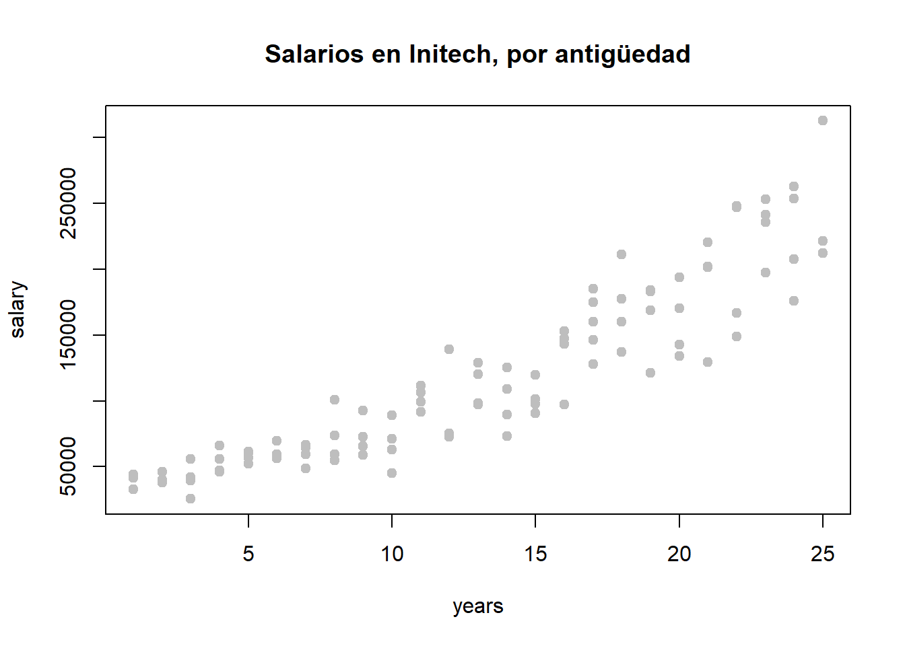
Primero ajustamos un modelo lineal simple.
initech_fit = lm(salary ~ years, data = initech)
summary(initech_fit)##
## Call:
## lm(formula = salary ~ years, data = initech)
##
## Residuals:
## Min 1Q Median 3Q Max
## -57225 -18104 241 15589 91332
##
## Coefficients:
## Estimate Std. Error t value Pr(>|t|)
## (Intercept) 5302 5750 0.922 0.359
## years 8637 389 22.200 <2e-16 ***
## ---
## Signif. codes: 0 '***' 0.001 '**' 0.01 '*' 0.05 '.' 0.1 ' ' 1
##
## Residual standard error: 27360 on 98 degrees of freedom
## Multiple R-squared: 0.8341, Adjusted R-squared: 0.8324
## F-statistic: 492.8 on 1 and 98 DF, p-value: < 2.2e-16Este modelo parece significativo, pero ¿cumple los supuestos del modelo?
plot(salary ~ years, data = initech, col = "grey", pch = 20, cex = 1.5,
main = "Salarios en Initech, por antigüedad")
abline(initech_fit, col = "darkorange", lwd = 2)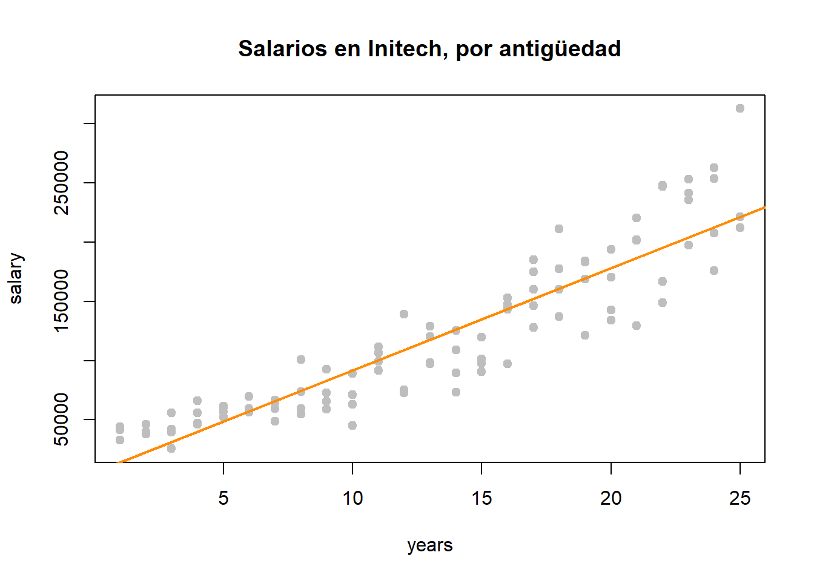
Al agregar la línea ajustada al gráfico, vemos que la relación lineal parece correcta.
par(mfrow = c(1, 2))
plot(fitted(initech_fit), resid(initech_fit), col = "grey", pch = 20,
xlab = "Ajustados", ylab = "Residuales", main = "Ajustados versus Residuales")
abline(h = 0, col = "darkorange", lwd = 2)
qqnorm(resid(initech_fit), main = "Normal Q-Q Plot", col = "darkgrey")
qqline(resid(initech_fit), col = "dodgerblue", lwd = 2)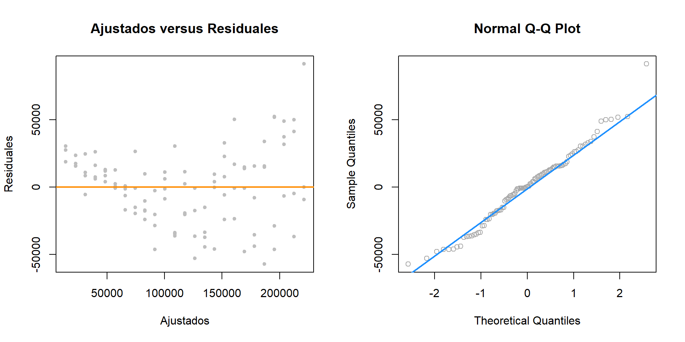
Sin embargo, a partir de la gráfica de ajustados versus residuales, parece que hay una varianza no constante. Específicamente, la varianza aumenta a medida que aumenta el valor ajustado.
14.1.1 Transformaciones estabilizadoras de varianza
Recuerde que el valor ajustado es nuestra estimación de la media a un valor particular de \(x\). Bajo nuestras suposiciones habituales,
\[ \epsilon \sim N(0,\sigma^2) \]
y por lo tanto
\[ \text{Var}[Y | X = x] = \sigma^2 \]
que es un valor constante para cualquier valor de \(x\).
Sin embargo, aquí vemos que la varianza es una función de la media,
\[ \text{Var}[Y \mid X = x] = h(\text{E}[Y \mid X = x]). \]
En este caso, \(h\) es una función creciente.
Para corregir esto, nos gustaría encontrar alguna función de \(Y\), \(g(Y)\) tal que,
\[ \text{Var}[g(Y) \mid X = x] = c \]
donde \(c\) es una constante que no depende de la media, \(\text{E}[Y \mid X = x]\). Una transformación que logra esto se llama transformación estabilizadora de varianza.
Una transformación de estabilización de la varianza (VST) común cuando vemos una varianza creciente en una gráfica de ajustados versus residuales es \(\log(Y)\). Además, si los valores de una variable abarcan más de un orden de magnitud y la variable es estrictamente positiva, es probable que sea útil reemplazar la variable por su logaritmo.
Un recordatorio, que para nuestros propósitos, \(\log\) y \(\ln\) son ambos logaritmos naturales. R usa log para referirse al logaritmo natural, a menos que se especifique una base diferente.
Ahora usaremos un modelo con una respuesta transformada logarítmicamente para los datos Initech,
\[ \log(Y_i) = \beta_0 + \beta_1 x_i + \epsilon_i. \]
Tenga en cuenta que si volvemos a escalar el modelo desde una escala logarítmica a la escala original de los datos, ahora tenemos
\[ Y_i = \exp(\beta_0 + \beta_1 x_i) \cdot \exp(\epsilon_i) \]
que tiene los errores que ingresan al modelo de forma multiplicativa.
El ajuste de este modelo en R requiere sólo una pequeña modificación en la especificación de nuestra fórmula.
initech_fit_log = lm(log(salary) ~ years, data = initech)Tenga en cuenta que aunque log(y) se considera la nueva variable respuesta, en realidad no creamos una nueva variable en R, sino que simplemente transformamos la variable dentro de la fórmula del modelo.
plot(log(salary) ~ years, data = initech, col = "grey", pch = 20, cex = 1.5,
main = "Salarios en Initech, por antigüedad")
abline(initech_fit_log, col = "darkorange", lwd = 2)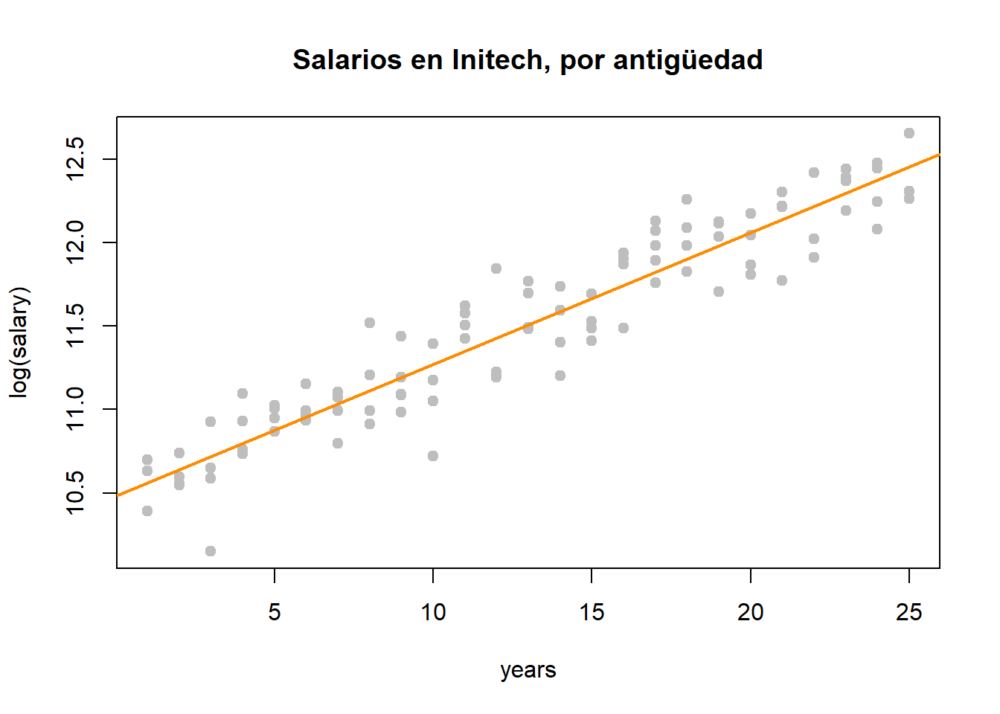
Al graficar los datos en la escala logarítmica transformada y al agregar la línea ajustada, la relación vuelve a parecer lineal y ya podemos ver que la variación sobre la línea ajustada parece constante.
plot(salary ~ years, data = initech, col = "grey", pch = 20, cex = 1.5,
main = "Salarios en Initech, por antigüedad")
curve(exp(initech_fit_log$coef[1] + initech_fit_log$coef[2] * x),
from = 0, to = 30, add = TRUE, col = "darkorange", lwd = 2)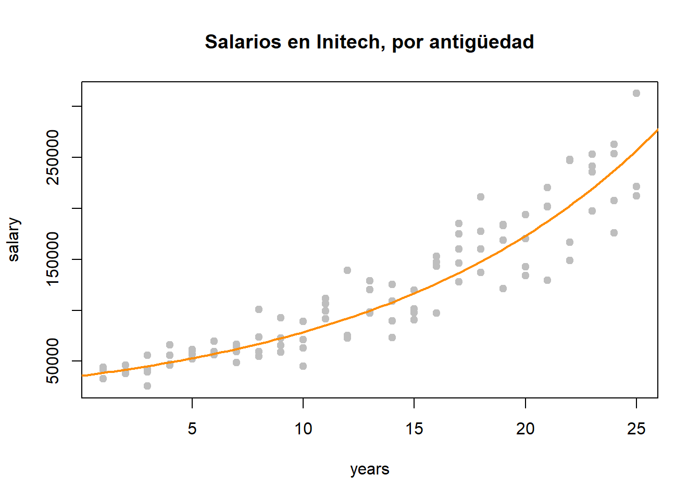
Al trazar los datos en la escala original y agregar la regresión ajustada, vemos una relación exponencial. Sin embargo, este sigue siendo un modelo lineal, ya que la nueva respuesta transformada, \(\log(y)\), sigue siendo una combinación lineal de los predictores.
par(mfrow = c(1, 2))
plot(fitted(initech_fit_log), resid(initech_fit_log), col = "grey", pch = 20,
xlab = "Ajustados", ylab = "Residuales", main = "Ajustados versus Residuales")
abline(h = 0, col = "darkorange", lwd = 2)
qqnorm(resid(initech_fit_log), main = "Normal Q-Q Plot", col = "darkgrey")
qqline(resid(initech_fit_log), col = "dodgerblue", lwd = 2)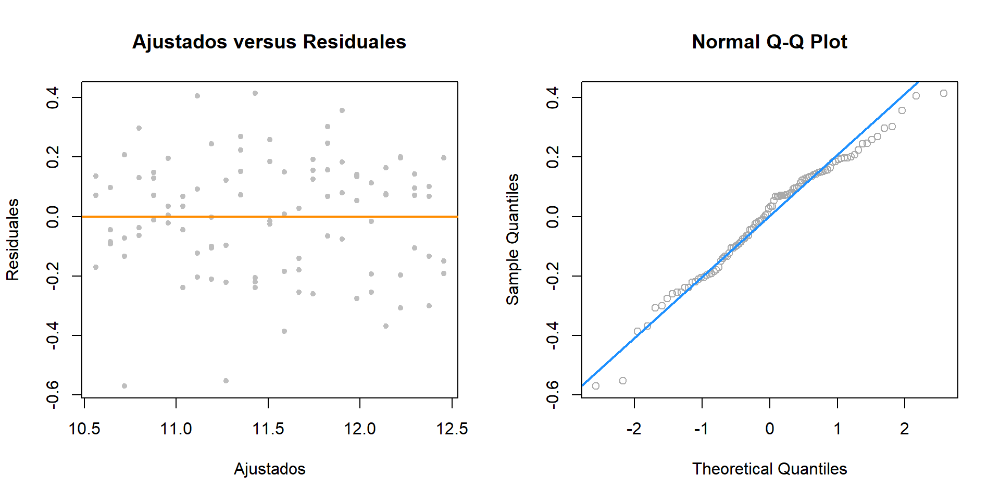
La gráfica de ajustados versus residuales se ve mucho mejor. Parece que el supuesto de varianza constante ya no se viola.
Al comparar el RMSE usando la respuesta original y transformada, también vemos que el modelo logarítmico transformado simplemente se ajusta mejor, con un error cuadrático promedio más pequeño.
sqrt(mean(resid(initech_fit) ^ 2))## [1] 27080.16sqrt(mean(resid(initech_fit_log) ^ 2))## [1] 0.1934907Pero espere, eso no es justo, esta diferencia se debe simplemente a las diferentes escalas que se utilizan.
sqrt(mean((initech$salary - fitted(initech_fit)) ^ 2))## [1] 27080.16sqrt(mean((initech$salary - exp(fitted(initech_fit_log))) ^ 2))## [1] 24280.36Transformando los valores ajustados del modelo logarítmico de nuevo a la escala de los datos, ¡de hecho vemos que encaja mejor!
summary(initech_fit_log)##
## Call:
## lm(formula = log(salary) ~ years, data = initech)
##
## Residuals:
## Min 1Q Median 3Q Max
## -0.57022 -0.13560 0.03048 0.14157 0.41366
##
## Coefficients:
## Estimate Std. Error t value Pr(>|t|)
## (Intercept) 10.48381 0.04108 255.18 <2e-16 ***
## years 0.07888 0.00278 28.38 <2e-16 ***
## ---
## Signif. codes: 0 '***' 0.001 '**' 0.01 '*' 0.05 '.' 0.1 ' ' 1
##
## Residual standard error: 0.1955 on 98 degrees of freedom
## Multiple R-squared: 0.8915, Adjusted R-squared: 0.8904
## F-statistic: 805.2 on 1 and 98 DF, p-value: < 2.2e-16Nuevamente, la respuesta transformada es una combinación lineal de los predictores,
\[ \log(\hat{y}(x)) = \hat{\beta}_0 + \hat{\beta}_1 x = 10.484 + 0.079x. \]
Pero ahora, si volvemos a escalar los datos de una escala logarítmica a la escala original, ahora tenemos
\[ \hat{y}(x) = \exp(\hat{\beta}_0) \exp(\hat{\beta}_1 x) = \exp(10.484)\exp(0.079x). \]
Vemos que por cada año adicional de experiencia, el salario promedio aumenta \(\exp(0.079) = 1.0822\) veces. Ahora estamos multiplicando, no sumando.
Si bien el uso de una transformación \(\log\) es posiblemente la transformación de variable de respuesta más común, existen muchas otras. Ahora consideraremos una familia de transformaciones y elegiremos la mejor de entre ellas, que incluye la transformación \(\log\).
14.1.2 Transformaciones de Box-Cox
El método de Box-Cox considera una familia de transformaciones sobre variables respuesta estrictamente positivas,
\[ g_\lambda(y) = \left\{ \begin{array}{lr}\displaystyle\frac{y^\lambda - 1}{\lambda} & \lambda \neq 0\\ & \\ \log(y) & \lambda = 0 \end{array} \right. \]
El parámetro \(\lambda\) se elige maximizando numéricamente la log-verosimilitud,
\[ L(\lambda) = -\frac{n}{2}\log(RSS_\lambda / n) + (\lambda -1)\sum \log(y_i). \]
Un intervalo de confianza al \(100(1 - \alpha)\%\) para \(\lambda\) es,
\[ \left\{ \lambda : L(\lambda) > L(\hat{\lambda}) - \frac{1}{2}\chi_{1,\alpha}^2 \right\} \]
que R trazará para que nos ayude a seleccionar rápidamente un valor \(\lambda\) apropiado. A menudo elegimos un valor “agradable” dentro del intervalo de confianza, en lugar del valor de \(\lambda\) que realmente maximiza la probabilidad.
library(MASS)
library(faraway)Aquí necesitamos el paquete MASS para la función boxcox(), y consideraremos un par de conjuntos de datos del paquete faraway.
Primero usaremos el conjunto de datos savings como un ejemplo del uso del método Box-Cox para justificar el uso de ninguna transformación. Ajustamos un modelo de regresión múltiple aditiva con sr como respuesta y cada una de las otras variables como predictoras.
savings_model = lm(sr ~ ., data = savings)Luego usamos la función boxcox() para encontrar la mejor transformación de la forma considerada por el método Box-Cox.
boxcox(savings_model, plotit = TRUE)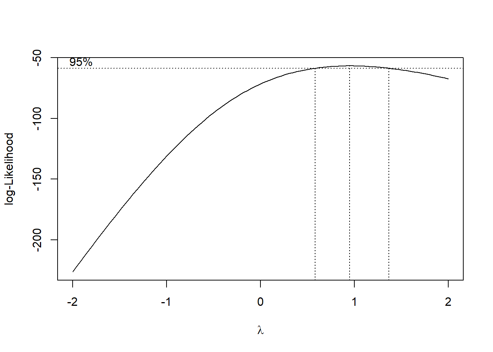
R grafica automáticamente la log-verosimilitud como una función de los posibles valores \(\lambda\). Indica tanto el valor que maximiza la probabilidad logarítmica como un intervalo de confianza para el valor \(\lambda\) que maximiza la probabilidad logarítmica.
boxcox(savings_model, plotit = TRUE, lambda = seq(0.5, 1.5, by = 0.1))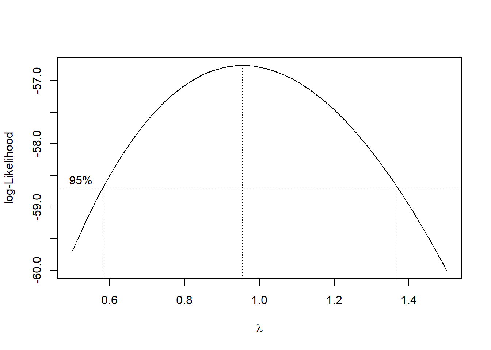
Tenga en cuenta que podemos especificar un rango de valores \(\lambda\) para considerar y, por lo tanto, graficarlos. A menudo especificamos un rango que es más interesante visualmente. Aquí vemos que \(\lambda = 1\) está en el intervalo de confianza y está extremadamente cerca del máximo. Esto sugiere una transformación de la forma.
\[ \frac{y^\lambda - 1}{\lambda} = \frac{y^1 - 1}{1} = y - 1. \]
Básicamente, esto no es una transformación. No cambiaría la varianza ni haría que el modelo se ajustara mejor. Restando 1 de cada valor, solo cambiaríamos la intersección del modelo y los errores resultantes serían los mismos.
plot(fitted(savings_model), resid(savings_model), col = "dodgerblue",
pch = 20, cex = 1.5, xlab = "Ajustados", ylab = "Residuales")
abline(h = 0, lty = 2, col = "darkorange", lwd = 2)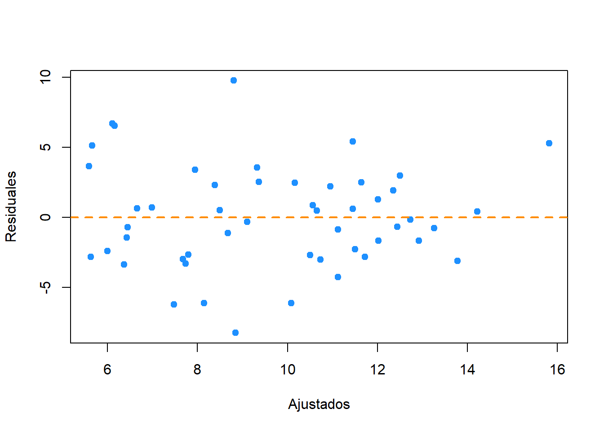
Al observar una gráfica de ajustados versus residuales se verifica que probablemente no haya ningún problema con los supuestos de este modelo, que verifican las pruebas de Breusch-Pagan y Shapiro-Wilk.
library(lmtest)
bptest(savings_model)##
## studentized Breusch-Pagan test
##
## data: savings_model
## BP = 4.9852, df = 4, p-value = 0.2888shapiro.test(resid(savings_model))##
## Shapiro-Wilk normality test
##
## data: resid(savings_model)
## W = 0.98698, p-value = 0.8524Ahora usaremos el conjunto de datos gala como ejemplo del uso del método Box-Cox para justificar una transformación distinta de \(\log\). Ajustamos un modelo de regresión múltiple aditivo con Species como respuesta y la mayoría de las otras variables como predictores.
gala_model = lm(Species ~ Area + Elevation + Nearest + Scruz + Adjacent, data = gala)plot(fitted(gala_model), resid(gala_model), col = "dodgerblue",
pch = 20, cex = 1.5, xlab = "Ajustados", ylab = "Residuales")
abline(h = 0, lty = 2, col = "darkorange", lwd = 2)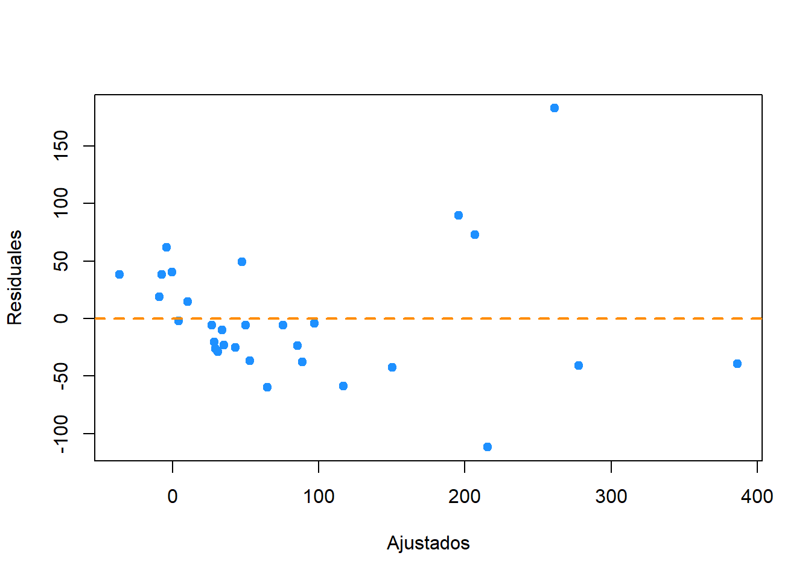
Aunque no hay muchos datos para valores ajustados grandes, todavía parece muy claro que se viola el supuesto de varianza constante.
boxcox(gala_model, lambda = seq(-0.25, 0.75, by = 0.05), plotit = TRUE)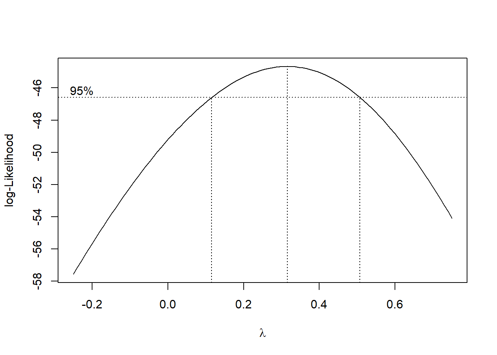
Usando el método de Box-Cox, vemos que \(\lambda=0.3\) está en el intervalo de confianza y está extremadamente cerca del máximo, lo que sugiere una transformación de la forma
\[ \frac{y^\lambda - 1}{\lambda} = \frac{y^{0.3} - 1}{0.3}. \]
Luego ajustamos un modelo con esta transformación aplicada a la respuesta.
gala_model_cox = lm((((Species ^ 0.3) - 1) / 0.3) ~ Area + Elevation + Nearest + Scruz + Adjacent, data = gala)plot(fitted(gala_model_cox), resid(gala_model_cox), col = "dodgerblue",
pch = 20, cex = 1.5, xlab = "Ajustados", ylab = "Residuales")
abline(h = 0, lty = 2, col = "darkorange", lwd = 2)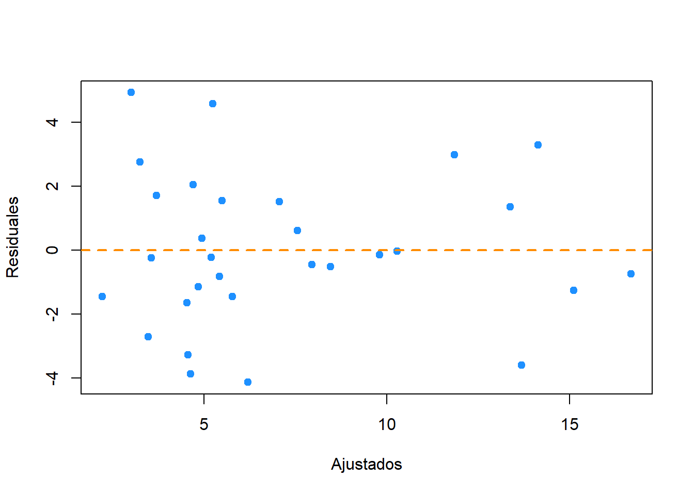
¡La gráfica resultante de ajustados versus residuales se ve mucho mejor!
Por último, volvemos a los datos de initech y al modelo initech_fit que habíamos usado anteriormente. Recuerde que este era el modelo sin transformar y que usamos una transformación \(\log\) para arreglarlo.
boxcox(initech_fit)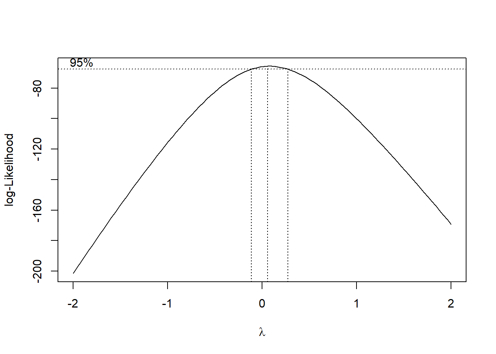
Usando el método Box-Cox, vemos que \(\lambda=0\) está tanto en el intervalo como muy cerca del máximo, lo que sugiere una transformación de la forma
\[ \log(y). \]
¡Entonces el método Box-Cox justifica nuestra elección previa de una transformación \(\log\)!
14.2 Transformación del predictor
Además de la transformación de la variable de respuesta, también podemos considerar transformaciones de variables predictoras. A veces, estas transformaciones pueden ayudar con la violación de los supuestos del modelo, y otras veces se pueden usar para simplemente adaptarse a un modelo más flexible.
str(autompg)## 'data.frame': 383 obs. of 9 variables:
## $ mpg : num 18 15 18 16 17 15 14 14 14 15 ...
## $ cyl : Factor w/ 3 levels "4","6","8": 3 3 3 3 3 3 3 3 3 3 ...
## $ disp : num 307 350 318 304 302 429 454 440 455 390 ...
## $ hp : num 130 165 150 150 140 198 220 215 225 190 ...
## $ wt : num 3504 3693 3436 3433 3449 ...
## $ acc : num 12 11.5 11 12 10.5 10 9 8.5 10 8.5 ...
## $ year : int 70 70 70 70 70 70 70 70 70 70 ...
## $ origin : int 1 1 1 1 1 1 1 1 1 1 ...
## $ domestic: num 1 1 1 1 1 1 1 1 1 1 ...Recuerde el conjunto de datos autompg del capítulo anterior. Aquí intentaremos modelar mpg en función de hp.
par(mfrow = c(1, 2))
plot(mpg ~ hp, data = autompg, col = "dodgerblue", pch = 20, cex = 1.5)
mpg_hp = lm(mpg ~ hp, data = autompg)
abline(mpg_hp, col = "darkorange", lwd = 2)
plot(fitted(mpg_hp), resid(mpg_hp), col = "dodgerblue",
pch = 20, cex = 1.5, xlab = "Ajustados", ylab = "Residuales")
abline(h = 0, lty = 2, col = "darkorange", lwd = 2)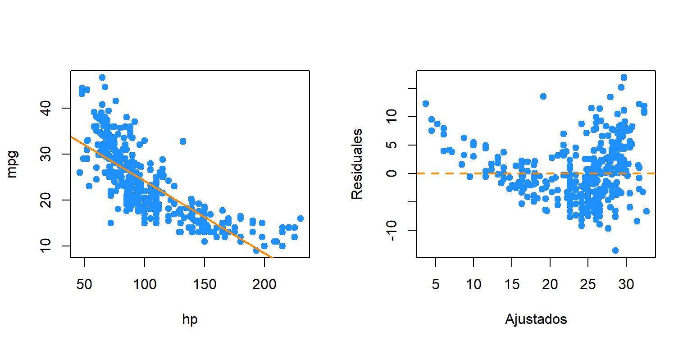
Primero intentamos SLR, pero vemos un patrón bastante obvio en la gráfica de ajustados versus residuales, que incluye una varianza creciente, por lo que intentamos una transformación \(\log\) de la respuesta
par(mfrow = c(1, 2))
plot(log(mpg) ~ hp, data = autompg, col = "dodgerblue", pch = 20, cex = 1.5)
mpg_hp_log = lm(log(mpg) ~ hp, data = autompg)
abline(mpg_hp_log, col = "darkorange", lwd = 2)
plot(fitted(mpg_hp_log), resid(mpg_hp_log), col = "dodgerblue",
pch = 20, cex = 1.5, xlab = "Ajustados", ylab = "Residuales")
abline(h = 0, lty = 2, col = "darkorange", lwd = 2)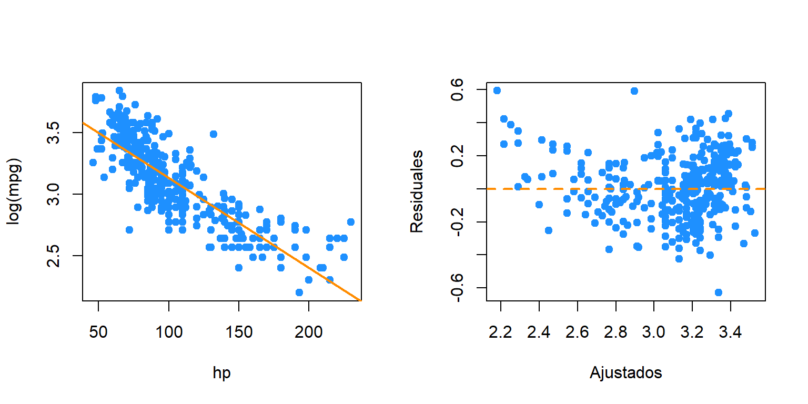
Después de realizar la transformación \(\log\) de la respuesta, todavía tenemos algunos de los mismos problemas con la los ajustados versus respuesta. Ahora, intentaremos también \(\log\) para transformar el predictor.
par(mfrow = c(1, 2))
plot(log(mpg) ~ log(hp), data = autompg, col = "dodgerblue", pch = 20, cex = 1.5)
mpg_hp_loglog = lm(log(mpg) ~ log(hp), data = autompg)
abline(mpg_hp_loglog, col = "darkorange", lwd = 2)
plot(fitted(mpg_hp_loglog), resid(mpg_hp_loglog), col = "dodgerblue",
pch = 20, cex = 1.5, xlab = "Ajustados", ylab = "Residuales")
abline(h = 0, lty = 2, col = "darkorange", lwd = 2)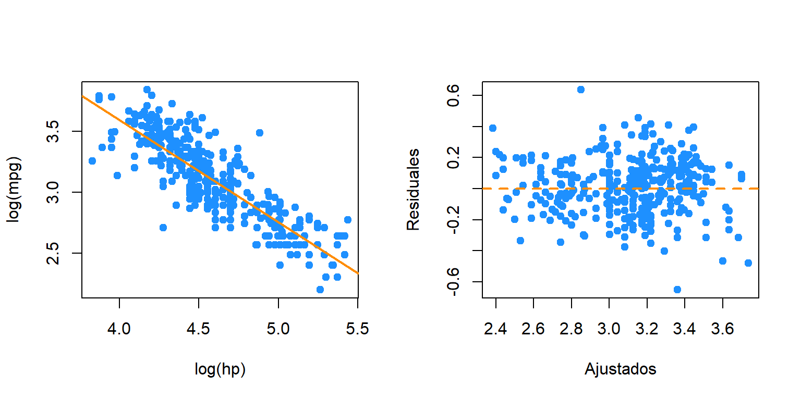
Aquí, nuestra gráfica de ajustados versus residuales se ve bien.
14.2.1 Polinomios
Otra “transformación” muy común de una variable predictora es el uso de transformaciones polinomiales. Son extremadamente útiles ya que permiten modelos más flexibles, pero no cambian las unidades de las variables.
No debería sorprender que las ventas de un producto estén relacionadas con el presupuesto publicitario del producto, pero hay rendimientos decrecientes. Una empresa no siempre puede esperar rendimientos lineales basados en un mayor presupuesto publicitario.
Considere los datos mensuales de las ventas de widgets Initech , \(y\), en función del gasto publicitario de Initech para dicho widget, \(x\), ambos por cada diez mil dólares. Los datos se pueden encontrar en marketing.csv.
marketing = read.csv("data/marketing.csv")plot(sales ~ advert, data = marketing,
xlab = "Gasto publicitario (* $100,00)", ylab = "Ventas (* $100,00)",
pch = 20, cex = 2)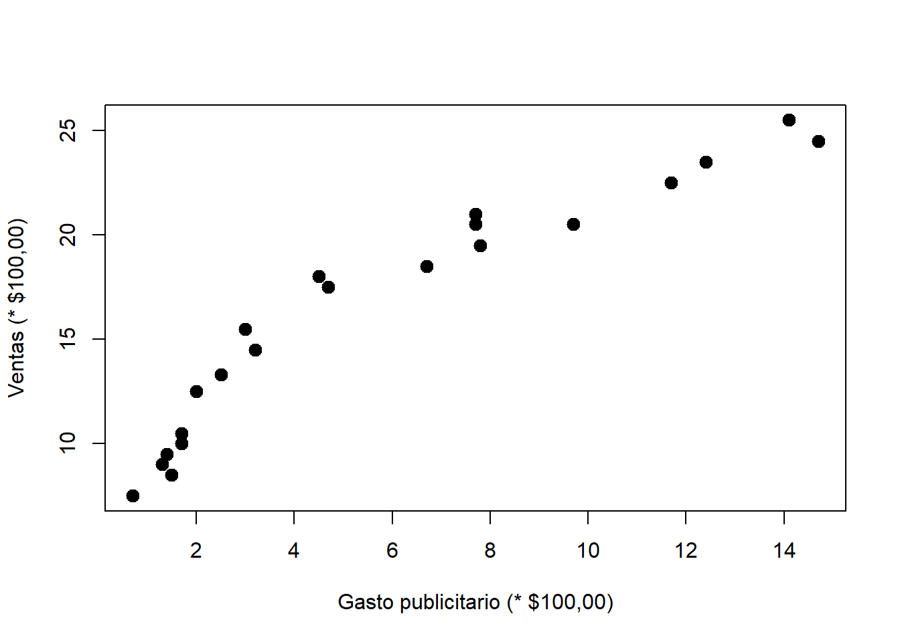
Nos gustaría ajustarnos al modelo,
\[ Y_i = \beta_0 + \beta_1 x_i + \beta_2 x_i^2 + \epsilon_i \]
donde \(\epsilon_i \sim N(0,\sigma^2)\) para \(i = 1, 2, \cdots 21.\)
La respuesta \(y\) ahora es una función lineal de “dos” variables que permiten que \(y\) sea una función no lineal del predictor único original \(x\). Consideramos que esto es una transformación, aunque en cierto sentido hemos agregado otro predictor.
Por lo tanto, nuestra matriz \(X\) es,
\[ \begin{bmatrix} 1 & x_1 & x_1^2 \\[3pt] 1 & x_2 & x_2^2 \\[3pt] 1 & x_3 & x_3^2 \\[3pt] \vdots & \vdots & \vdots \\[3pt] 1 & x_{n} & x_{n}^2 \\ \end{bmatrix} \]
Luego podemos proceder a ajustar el modelo como lo hicimos en el pasado para la regresión lineal múltiple.
\[ \hat{\beta} = \left( X^\top X \right)^{-1}X^\top y. \]
Nuestras estimaciones tendrán las propiedades habituales. La media sigue
\[ E[\hat{\beta}] = \beta, \]
y varianza
\[ \text{Var}[\hat{\beta}] = \sigma^2 \left( X^\top X \right)^{-1}. \]
También mantenemos los mismos resultados distribucionales
\[ \hat{\beta}_j \sim N\left(\beta_j, \sigma^2 C_{jj} \right). \]
mark_mod = lm(sales ~ advert, data = marketing)
summary(mark_mod)##
## Call:
## lm(formula = sales ~ advert, data = marketing)
##
## Residuals:
## Min 1Q Median 3Q Max
## -2.7845 -1.4762 -0.5103 1.2361 3.1869
##
## Coefficients:
## Estimate Std. Error t value Pr(>|t|)
## (Intercept) 9.4502 0.6806 13.88 2.13e-11 ***
## advert 1.1918 0.0937 12.72 9.65e-11 ***
## ---
## Signif. codes: 0 '***' 0.001 '**' 0.01 '*' 0.05 '.' 0.1 ' ' 1
##
## Residual standard error: 1.907 on 19 degrees of freedom
## Multiple R-squared: 0.8949, Adjusted R-squared: 0.8894
## F-statistic: 161.8 on 1 and 19 DF, p-value: 9.646e-11Si bien el modelo SLR es significativo, la gráfica de ajustados versus residuales tendría un patrón muy claro.
mark_mod_poly2 = lm(sales ~ advert + I(advert ^ 2), data = marketing)
summary(mark_mod_poly2)##
## Call:
## lm(formula = sales ~ advert + I(advert^2), data = marketing)
##
## Residuals:
## Min 1Q Median 3Q Max
## -1.9175 -0.8333 -0.1948 0.9292 2.1385
##
## Coefficients:
## Estimate Std. Error t value Pr(>|t|)
## (Intercept) 6.76161 0.67219 10.059 8.16e-09 ***
## advert 2.46231 0.24830 9.917 1.02e-08 ***
## I(advert^2) -0.08745 0.01658 -5.275 5.14e-05 ***
## ---
## Signif. codes: 0 '***' 0.001 '**' 0.01 '*' 0.05 '.' 0.1 ' ' 1
##
## Residual standard error: 1.228 on 18 degrees of freedom
## Multiple R-squared: 0.9587, Adjusted R-squared: 0.9541
## F-statistic: 209 on 2 and 18 DF, p-value: 3.486e-13Para agregar el término de segundo orden, necesitamos usar la función I() en la especificación del modelo alrededor de nuestro predictor recién creado. Vemos que con el término de primer orden en el modelo, el término cuadrático también es significativo.
n = length(marketing$advert)
X = cbind(rep(1, n), marketing$advert, marketing$advert ^ 2)
t(X) %*% X## [,1] [,2] [,3]
## [1,] 21.00 120.70 1107.95
## [2,] 120.70 1107.95 12385.86
## [3,] 1107.95 12385.86 151369.12solve(t(X) %*% X) %*% t(X) %*% marketing$sales## [,1]
## [1,] 6.76161045
## [2,] 2.46230964
## [3,] -0.08745394Aquí verificamos que las estimaciones de los parámetros se encontraron como era de esperar.
También podríamos agregar términos de orden superior, como un predictor de tercer grado. Esto es fácil de hacer. Nuestra matriz \(X\) simplemente se vuelve más grande nuevamente.
\[ Y_i = \beta_0 + \beta_1 x_i + \beta_2 x_i^2 + \beta_3 x_i^3 + \epsilon_i \]
\[ \begin{bmatrix} 1 & x_1 & x_1^2 & x_1^3 \\[3pt] 1 & x_2 & x_2^2 & x_2^3 \\[3pt] 1 & x_3 & x_3^2 & x_3^3 \\[3pt] \vdots & \vdots & \vdots & \vdots \\[3pt] 1 & x_{n} & x_{n}^2 & x_{n}^3 \\ \end{bmatrix} \]
mark_mod_poly3 = lm(sales ~ advert + I(advert ^ 2) + I(advert ^ 3), data = marketing)
summary(mark_mod_poly3)##
## Call:
## lm(formula = sales ~ advert + I(advert^2) + I(advert^3), data = marketing)
##
## Residuals:
## Min 1Q Median 3Q Max
## -1.44322 -0.61310 -0.01527 0.68131 1.22517
##
## Coefficients:
## Estimate Std. Error t value Pr(>|t|)
## (Intercept) 3.890070 0.761956 5.105 8.79e-05 ***
## advert 4.681864 0.501032 9.344 4.14e-08 ***
## I(advert^2) -0.455152 0.078977 -5.763 2.30e-05 ***
## I(advert^3) 0.016131 0.003429 4.704 0.000205 ***
## ---
## Signif. codes: 0 '***' 0.001 '**' 0.01 '*' 0.05 '.' 0.1 ' ' 1
##
## Residual standard error: 0.8329 on 17 degrees of freedom
## Multiple R-squared: 0.9821, Adjusted R-squared: 0.9789
## F-statistic: 310.2 on 3 and 17 DF, p-value: 4.892e-15Ahora vemos que con los términos de primer y segundo orden en el modelo, el término de tercer orden también es significativo. ¿Pero esto tiene sentido en la práctica? El siguiente gráfico debería dar pistas sobre por qué no es así. (¡El modelo con el término de tercer orden no tiene rendimientos decrecientes!)
plot(sales ~ advert, data = marketing,
xlab = "Gasto publicitario (* $100,00)", ylab = "Ventas (* $100,00)",
pch = 20, cex = 2)
abline(mark_mod, lty = 2, col = "green", lwd = 2)
xplot = seq(0, 16, by = 0.01)
lines(xplot, predict(mark_mod_poly2, newdata = data.frame(advert = xplot)),
col = "blue", lwd = 2)
lines(xplot, predict(mark_mod_poly3, newdata = data.frame(advert = xplot)),
col = "red", lty = 3, lwd = 3)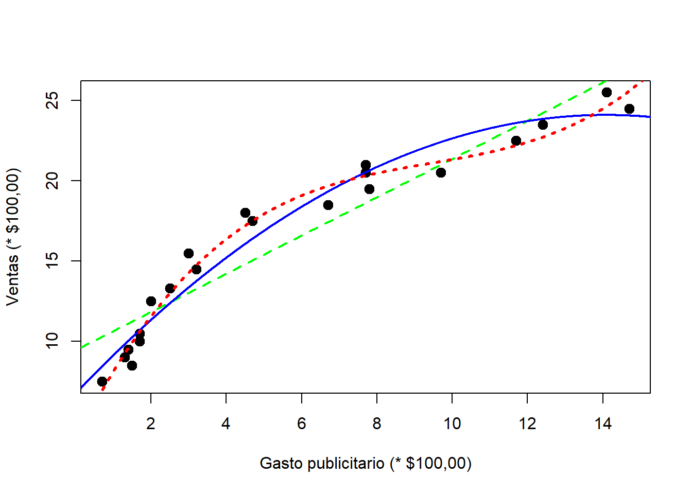
El gráfico anterior se realizó utilizando gráficos base en “R”. El siguiente gráfico se hizo usando el paquete ggplot2, un método de graficación cada vez más popular en R.
library(ggplot2)
ggplot(data = marketing, aes(x = advert, y = sales)) +
stat_smooth(method = "lm", se = FALSE, color = "green", formula = y ~ x) +
stat_smooth(method = "lm", se = FALSE, color = "blue", formula = y ~ x + I(x ^ 2)) +
stat_smooth(method = "lm", se = FALSE, color = "red", formula = y ~ x + I(x ^ 2)+ I(x ^ 3)) +
geom_point(colour = "black", size = 3)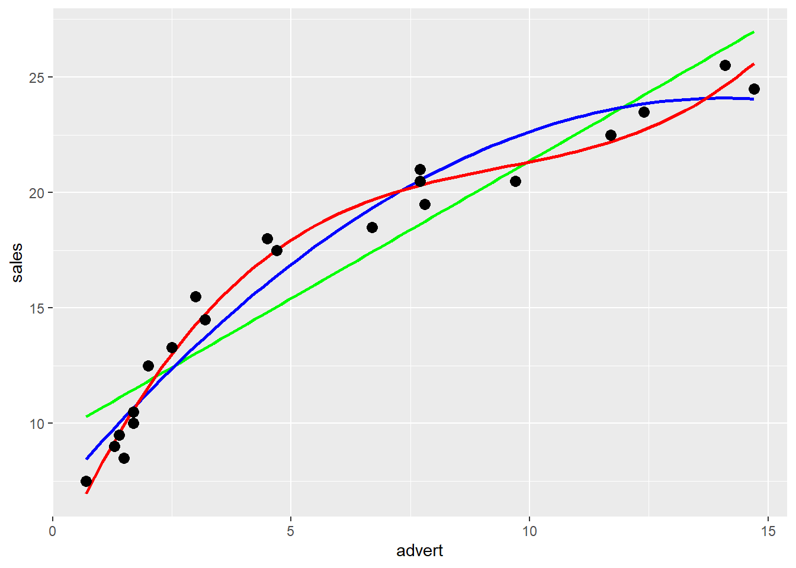
Tenga en cuenta que podríamos ajustar un polinomio de un orden arbitrario,
\[ Y_i = \beta_0 + \beta_1 x_i + \beta_2 x_i^2 + \cdots + \beta_{p-1}x_i^{p-1} + \epsilon_i \]
Sin embargo, debemos tener cuidado con el ajuste excesivo, ya que con un polinomio de un grado menor que el número de observaciones, a veces es posible ajustar un modelo perfectamente.
set.seed(1234)
x = seq(0, 10)
y = 3 + x + 4 * x ^ 2 + rnorm(11, 0, 20)
plot(x, y, ylim = c(-300, 400), cex = 2, pch = 20)
fit = lm(y ~ x + I(x ^ 2))
#summary(fit)
fit_perf = lm(y ~ x + I(x ^ 2) + I(x ^ 3) + I(x ^ 4) + I(x ^ 5) + I(x ^ 6)
+ I(x ^ 7) + I(x ^ 8) + I(x ^ 9) + I(x ^ 10))
summary(fit_perf)##
## Call:
## lm(formula = y ~ x + I(x^2) + I(x^3) + I(x^4) + I(x^5) + I(x^6) +
## I(x^7) + I(x^8) + I(x^9) + I(x^10))
##
## Residuals:
## ALL 11 residuals are 0: no residual degrees of freedom!
##
## Coefficients:
## Estimate Std. Error t value Pr(>|t|)
## (Intercept) -2.114e+01 NA NA NA
## x -1.918e+03 NA NA NA
## I(x^2) 4.969e+03 NA NA NA
## I(x^3) -4.932e+03 NA NA NA
## I(x^4) 2.581e+03 NA NA NA
## I(x^5) -8.035e+02 NA NA NA
## I(x^6) 1.570e+02 NA NA NA
## I(x^7) -1.947e+01 NA NA NA
## I(x^8) 1.490e+00 NA NA NA
## I(x^9) -6.424e-02 NA NA NA
## I(x^10) 1.195e-03 NA NA NA
##
## Residual standard error: NaN on 0 degrees of freedom
## Multiple R-squared: 1, Adjusted R-squared: NaN
## F-statistic: NaN on 10 and 0 DF, p-value: NAxplot = seq(0, 10, by = 0.1)
lines(xplot, predict(fit, newdata = data.frame(x = xplot)),
col = "dodgerblue", lwd = 2, lty = 1)
lines(xplot, predict(fit_perf, newdata = data.frame(x = xplot)),
col = "darkorange", lwd = 2, lty = 2)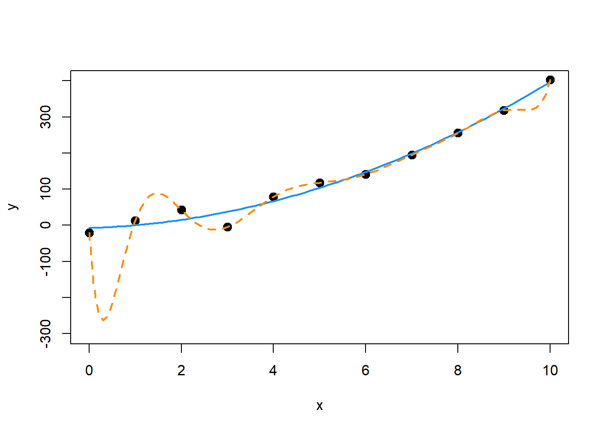
Observe que en el resumen, R no pudo calcular los errores estándar. Este es el resultado de estar “fuera” de los grados de libertad. Con 11 parámetros \(\beta\) y 11 puntos de datos, usamos todos los grados de libertad antes de poder estimar \(\sigma\).
En este ejemplo, la verdadera relación es cuadrática, pero el ajuste del polinomio de orden 10 es “perfecto”. En el próximo capítulo nos centraremos en el compromiso entre bondad de ajuste (minimización de errores) y complejidad del modelo.
Suponga que trabaja para un fabricante de automóviles que fabrica un gran sedán de lujo. Le gustaría saber cómo funciona el automóvil desde el punto de vista de la eficiencia del combustible cuando se conduce a varias velocidades. En lugar de probar el automóvil a todas las velocidades imaginables (lo que sería imposible), crea un experimento en el que el automóvil se conduce a velocidades de interés en incrementos de 5 millas por hora.
Nuestro objetivo, entonces, es ajustar un modelo a estos datos para poder predecir la eficiencia del combustible al conducir a ciertas velocidades. Los datos de este ejemplo se pueden encontrar en fuel_econ.csv.
econ = read.csv("data/fuel_econ.csv")En este ejemplo, con frecuencia buscaremos una gráfica de ajustados versus residuales, por lo que deberíamos escribir una función para hacer nuestra vida más fácil, pero esto se deja como un ejercicio de tarea.
También agregaremos curvas ajustadas a los graficos de dispersión repetidamente, así que, de manera inteligente, escribiremos una función para hacerlo.
plot_econ_curve = function(model){
plot(mpg ~ mph, data = econ, xlab = "Velocidad (millas por hora)",
ylab = "Eficiencia de combustible (millas por galón)", col = "dodgerblue",
pch = 20, cex =2)
xplot = seq(10, 75, by = 0.1)
lines(xplot, predict(model, newdata = data.frame(mph = xplot)),
col = "darkorange", lwd = 2, lty = 1)
}Así que ahora primero ajustamos una regresión lineal simple a estos datos.
fit1 = lm(mpg ~ mph, data = econ)par(mfrow = c(1, 2))
plot_econ_curve(fit1)
plot(fitted(fit1), resid(fit1), xlab = "Ajustados", ylab = "Residuales",
col = "dodgerblue", pch = 20, cex =2)
abline(h = 0, col = "darkorange", lwd = 2)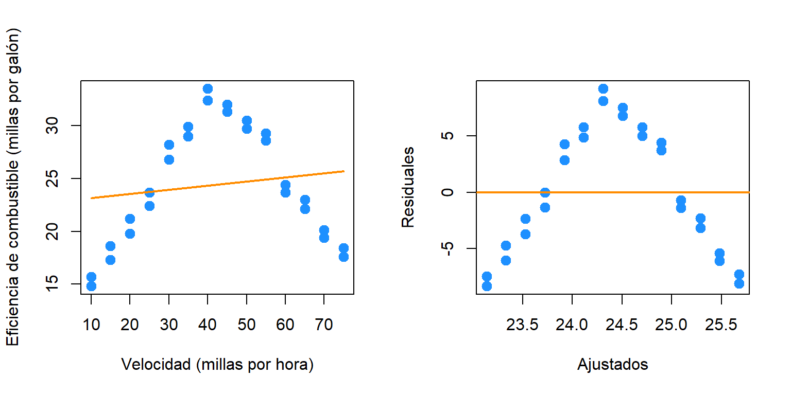
Claramente podemos hacerlo mejor. Sí, la eficiencia del combustible aumenta a medida que aumenta la velocidad, pero solo hasta cierto punto.
Ahora agregaremos términos polinomiales hasta que encajemos en un ajuste adecuado.
fit2 = lm(mpg ~ mph + I(mph ^ 2), data = econ)
summary(fit2)##
## Call:
## lm(formula = mpg ~ mph + I(mph^2), data = econ)
##
## Residuals:
## Min 1Q Median 3Q Max
## -2.8411 -0.9694 0.0017 1.0181 3.3900
##
## Coefficients:
## Estimate Std. Error t value Pr(>|t|)
## (Intercept) 2.4444505 1.4241091 1.716 0.0984 .
## mph 1.2716937 0.0757321 16.792 3.99e-15 ***
## I(mph^2) -0.0145014 0.0008719 -16.633 4.97e-15 ***
## ---
## Signif. codes: 0 '***' 0.001 '**' 0.01 '*' 0.05 '.' 0.1 ' ' 1
##
## Residual standard error: 1.663 on 25 degrees of freedom
## Multiple R-squared: 0.9188, Adjusted R-squared: 0.9123
## F-statistic: 141.5 on 2 and 25 DF, p-value: 2.338e-14par(mfrow = c(1, 2))
plot_econ_curve(fit2)
plot(fitted(fit2), resid(fit2), xlab = "Ajustados", ylab = "Residuales",
col = "dodgerblue", pch = 20, cex =2)
abline(h = 0, col = "darkorange", lwd = 2)Si bien este modelo claramente se ajusta mucho mejor, y el término de segundo orden es significativo, todavía vemos un patrón en la gráfica ajustada versus residual que sugiere que los términos de orden superior ayudarán. Además, esperaríamos que la curva se aplana a medida que aumenta o disminuye la velocidad, no que descienda bruscamente como vemos aquí.
fit3 = lm(mpg ~ mph + I(mph ^ 2) + I(mph ^ 3), data = econ)
summary(fit3)##
## Call:
## lm(formula = mpg ~ mph + I(mph^2) + I(mph^3), data = econ)
##
## Residuals:
## Min 1Q Median 3Q Max
## -2.8112 -0.9677 0.0264 1.0345 3.3827
##
## Coefficients:
## Estimate Std. Error t value Pr(>|t|)
## (Intercept) 2.258e+00 2.768e+00 0.816 0.4227
## mph 1.291e+00 2.529e-01 5.103 3.2e-05 ***
## I(mph^2) -1.502e-02 6.604e-03 -2.274 0.0322 *
## I(mph^3) 4.066e-06 5.132e-05 0.079 0.9375
## ---
## Signif. codes: 0 '***' 0.001 '**' 0.01 '*' 0.05 '.' 0.1 ' ' 1
##
## Residual standard error: 1.697 on 24 degrees of freedom
## Multiple R-squared: 0.9188, Adjusted R-squared: 0.9087
## F-statistic: 90.56 on 3 and 24 DF, p-value: 3.17e-13par(mfrow = c(1, 2))
plot_econ_curve(fit3)
plot(fitted(fit3), resid(fit3), xlab = "Ajustados", ylab = "Residuales",
col = "dodgerblue", pch = 20, cex =2)
abline(h = 0, col = "darkorange", lwd = 2)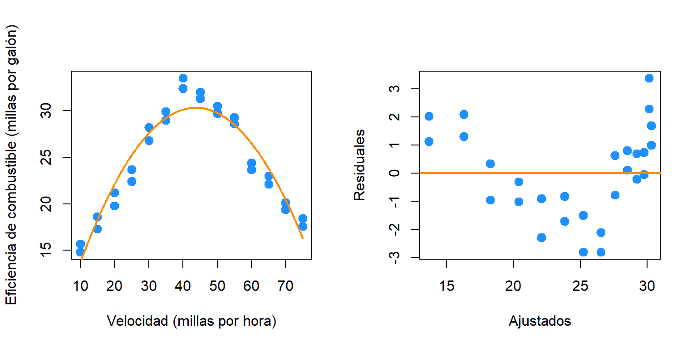
Agregar el término de tercer orden no parece ayudar en absoluto. La curva ajustada apenas cambia. Esto tiene sentido, ya que lo que nos gustaría es que la curva se aplanara en los extremos. Para ello necesitaremos un término polinomial de grado par.
fit4 = lm(mpg ~ mph + I(mph ^ 2) + I(mph ^ 3) + I(mph ^ 4), data = econ)
summary(fit4)##
## Call:
## lm(formula = mpg ~ mph + I(mph^2) + I(mph^3) + I(mph^4), data = econ)
##
## Residuals:
## Min 1Q Median 3Q Max
## -1.57410 -0.60308 0.04236 0.74481 1.93038
##
## Coefficients:
## Estimate Std. Error t value Pr(>|t|)
## (Intercept) 2.146e+01 2.965e+00 7.238 2.28e-07 ***
## mph -1.468e+00 3.913e-01 -3.751 0.00104 **
## I(mph^2) 1.081e-01 1.673e-02 6.463 1.35e-06 ***
## I(mph^3) -2.130e-03 2.844e-04 -7.488 1.31e-07 ***
## I(mph^4) 1.255e-05 1.665e-06 7.539 1.17e-07 ***
## ---
## Signif. codes: 0 '***' 0.001 '**' 0.01 '*' 0.05 '.' 0.1 ' ' 1
##
## Residual standard error: 0.9307 on 23 degrees of freedom
## Multiple R-squared: 0.9766, Adjusted R-squared: 0.9726
## F-statistic: 240.2 on 4 and 23 DF, p-value: < 2.2e-16par(mfrow = c(1, 2))
plot_econ_curve(fit4)
plot(fitted(fit4), resid(fit4), xlab = "Ajustados", ylab = "Residuales",
col = "dodgerblue", pch = 20, cex =2)
abline(h = 0, col = "darkorange", lwd = 2)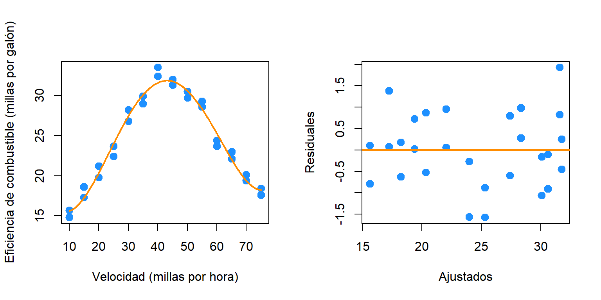
Ahora estamos progresando. El término de cuarto orden es significativo con los demás términos del modelo. También estamos empezando a ver lo que esperábamos para baja y alta velocidad. Sin embargo, todavía parece haber un patrón en los residuos, por lo que volveremos a intentar términos de orden superior. Sumaremos el quinto y el sexto juntos, ya que sumar el quinto será similar a sumar el tercero.
fit6 = lm(mpg ~ mph + I(mph ^ 2) + I(mph ^ 3) + I(mph ^ 4) + I(mph ^ 5) + I(mph^6), data = econ)
summary(fit6)##
## Call:
## lm(formula = mpg ~ mph + I(mph^2) + I(mph^3) + I(mph^4) + I(mph^5) +
## I(mph^6), data = econ)
##
## Residuals:
## Min 1Q Median 3Q Max
## -1.1129 -0.5717 -0.1707 0.5026 1.5288
##
## Coefficients:
## Estimate Std. Error t value Pr(>|t|)
## (Intercept) -4.206e+00 1.204e+01 -0.349 0.7304
## mph 4.203e+00 2.553e+00 1.646 0.1146
## I(mph^2) -3.521e-01 2.012e-01 -1.750 0.0947 .
## I(mph^3) 1.579e-02 7.691e-03 2.053 0.0527 .
## I(mph^4) -3.473e-04 1.529e-04 -2.271 0.0338 *
## I(mph^5) 3.585e-06 1.518e-06 2.362 0.0279 *
## I(mph^6) -1.402e-08 5.941e-09 -2.360 0.0280 *
## ---
## Signif. codes: 0 '***' 0.001 '**' 0.01 '*' 0.05 '.' 0.1 ' ' 1
##
## Residual standard error: 0.8657 on 21 degrees of freedom
## Multiple R-squared: 0.9815, Adjusted R-squared: 0.9762
## F-statistic: 186 on 6 and 21 DF, p-value: < 2.2e-16par(mfrow = c(1, 2))
plot_econ_curve(fit6)
plot(fitted(fit6), resid(fit6), xlab = "Ajustados", ylab = "Residuales",
col = "dodgerblue", pch = 20, cex =2)
abline(h = 0, col = "darkorange", lwd = 2)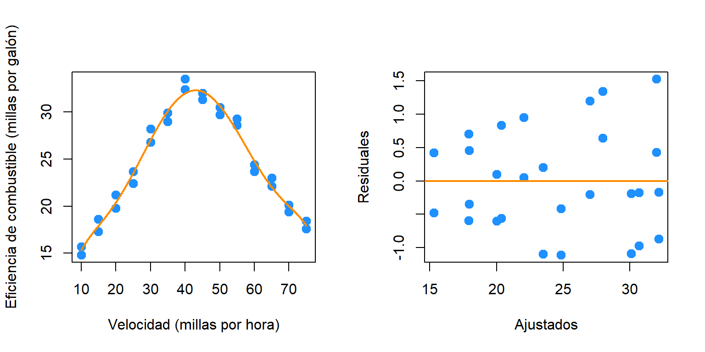
Nuevamente, el término de sexto orden es significativo con los otros términos del modelo y aquí vemos menos patrón en el gráfico de residuos. Probemos ahora cuál de los dos modelos anteriores preferimos. Vamos a probar
\[ H_0: \beta_5 = \beta_6 = 0. \]
anova(fit4, fit6)## Analysis of Variance Table
##
## Model 1: mpg ~ mph + I(mph^2) + I(mph^3) + I(mph^4)
## Model 2: mpg ~ mph + I(mph^2) + I(mph^3) + I(mph^4) + I(mph^5) + I(mph^6)
## Res.Df RSS Df Sum of Sq F Pr(>F)
## 1 23 19.922
## 2 21 15.739 2 4.1828 2.7905 0.0842 .
## ---
## Signif. codes: 0 '***' 0.001 '**' 0.01 '*' 0.05 '.' 0.1 ' ' 1Entonces, esta prueba no rechaza la hipótesis nula a un nivel de significancia de \(\alpha=0.05\), sin embargo, el valor p es todavía bastante pequeño, y la gráfica ajustada versus residual es mucho mejor para el modelo con el término de sexto orden. Esto hace que el modelo de sexto orden sea una buena elección. Podríamos repetir este proceso una vez más.
fit8 = lm(mpg ~ mph + I(mph ^ 2) + I(mph ^ 3) + I(mph ^ 4) + I(mph ^ 5)
+ I(mph ^ 6) + I(mph ^ 7) + I(mph ^ 8), data = econ)
summary(fit8)##
## Call:
## lm(formula = mpg ~ mph + I(mph^2) + I(mph^3) + I(mph^4) + I(mph^5) +
## I(mph^6) + I(mph^7) + I(mph^8), data = econ)
##
## Residuals:
## Min 1Q Median 3Q Max
## -1.21938 -0.50464 -0.09105 0.49029 1.45440
##
## Coefficients:
## Estimate Std. Error t value Pr(>|t|)
## (Intercept) -1.202e+01 7.045e+01 -0.171 0.866
## mph 6.021e+00 2.014e+01 0.299 0.768
## I(mph^2) -5.037e-01 2.313e+00 -0.218 0.830
## I(mph^3) 2.121e-02 1.408e-01 0.151 0.882
## I(mph^4) -4.008e-04 5.017e-03 -0.080 0.937
## I(mph^5) 1.789e-06 1.080e-04 0.017 0.987
## I(mph^6) 4.486e-08 1.381e-06 0.032 0.974
## I(mph^7) -6.456e-10 9.649e-09 -0.067 0.947
## I(mph^8) 2.530e-12 2.835e-11 0.089 0.930
##
## Residual standard error: 0.9034 on 19 degrees of freedom
## Multiple R-squared: 0.9818, Adjusted R-squared: 0.9741
## F-statistic: 128.1 on 8 and 19 DF, p-value: 7.074e-15par(mfrow = c(1, 2))
plot_econ_curve(fit8)
plot(fitted(fit8), resid(fit8), xlab = "Ajustados", ylab = "Residuals",
col = "dodgerblue", pch = 20, cex =2)
abline(h = 0, col = "darkorange", lwd = 2)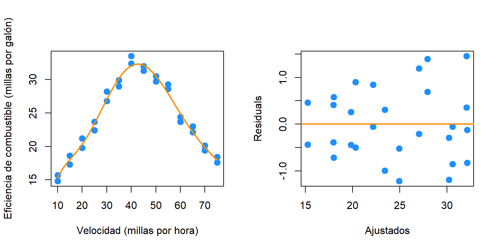
summary(fit8)##
## Call:
## lm(formula = mpg ~ mph + I(mph^2) + I(mph^3) + I(mph^4) + I(mph^5) +
## I(mph^6) + I(mph^7) + I(mph^8), data = econ)
##
## Residuals:
## Min 1Q Median 3Q Max
## -1.21938 -0.50464 -0.09105 0.49029 1.45440
##
## Coefficients:
## Estimate Std. Error t value Pr(>|t|)
## (Intercept) -1.202e+01 7.045e+01 -0.171 0.866
## mph 6.021e+00 2.014e+01 0.299 0.768
## I(mph^2) -5.037e-01 2.313e+00 -0.218 0.830
## I(mph^3) 2.121e-02 1.408e-01 0.151 0.882
## I(mph^4) -4.008e-04 5.017e-03 -0.080 0.937
## I(mph^5) 1.789e-06 1.080e-04 0.017 0.987
## I(mph^6) 4.486e-08 1.381e-06 0.032 0.974
## I(mph^7) -6.456e-10 9.649e-09 -0.067 0.947
## I(mph^8) 2.530e-12 2.835e-11 0.089 0.930
##
## Residual standard error: 0.9034 on 19 degrees of freedom
## Multiple R-squared: 0.9818, Adjusted R-squared: 0.9741
## F-statistic: 128.1 on 8 and 19 DF, p-value: 7.074e-15anova(fit6, fit8)## Analysis of Variance Table
##
## Model 1: mpg ~ mph + I(mph^2) + I(mph^3) + I(mph^4) + I(mph^5) + I(mph^6)
## Model 2: mpg ~ mph + I(mph^2) + I(mph^3) + I(mph^4) + I(mph^5) + I(mph^6) +
## I(mph^7) + I(mph^8)
## Res.Df RSS Df Sum of Sq F Pr(>F)
## 1 21 15.739
## 2 19 15.506 2 0.2324 0.1424 0.8682Claramente nos quedaríamos con fit6. El término de octavo orden no es significativo con los otros términos del modelo y la prueba F no rechaza.
Aparte, tenga en cuenta que existe una forma más rápida de especificar un modelo con muchos términos de orden superior.
fit6_alt = lm(mpg ~ poly(mph, 6), data = econ)
all.equal(fitted(fit6), fitted(fit6_alt))## [1] TRUEPrimero verificamos que este método produce los mismos valores ajustados. Sin embargo, los coeficientes estimados son diferentes.
coef(fit6)## (Intercept) mph I(mph^2) I(mph^3) I(mph^4)
## -4.206224e+00 4.203382e+00 -3.521452e-01 1.579340e-02 -3.472665e-04
## I(mph^5) I(mph^6)
## 3.585201e-06 -1.401995e-08coef(fit6_alt)## (Intercept) poly(mph, 6)1 poly(mph, 6)2 poly(mph, 6)3 poly(mph, 6)4
## 24.40714286 4.16769628 -27.66685755 0.13446747 7.01671480
## poly(mph, 6)5 poly(mph, 6)6
## 0.09288754 -2.04307796Esto se debe a que poly() usa polinomios ortogonales, lo que resuelve un problema que discutiremos en el próximo capítulo.
summary(fit6)##
## Call:
## lm(formula = mpg ~ mph + I(mph^2) + I(mph^3) + I(mph^4) + I(mph^5) +
## I(mph^6), data = econ)
##
## Residuals:
## Min 1Q Median 3Q Max
## -1.1129 -0.5717 -0.1707 0.5026 1.5288
##
## Coefficients:
## Estimate Std. Error t value Pr(>|t|)
## (Intercept) -4.206e+00 1.204e+01 -0.349 0.7304
## mph 4.203e+00 2.553e+00 1.646 0.1146
## I(mph^2) -3.521e-01 2.012e-01 -1.750 0.0947 .
## I(mph^3) 1.579e-02 7.691e-03 2.053 0.0527 .
## I(mph^4) -3.473e-04 1.529e-04 -2.271 0.0338 *
## I(mph^5) 3.585e-06 1.518e-06 2.362 0.0279 *
## I(mph^6) -1.402e-08 5.941e-09 -2.360 0.0280 *
## ---
## Signif. codes: 0 '***' 0.001 '**' 0.01 '*' 0.05 '.' 0.1 ' ' 1
##
## Residual standard error: 0.8657 on 21 degrees of freedom
## Multiple R-squared: 0.9815, Adjusted R-squared: 0.9762
## F-statistic: 186 on 6 and 21 DF, p-value: < 2.2e-16summary(fit6_alt)##
## Call:
## lm(formula = mpg ~ poly(mph, 6), data = econ)
##
## Residuals:
## Min 1Q Median 3Q Max
## -1.1129 -0.5717 -0.1707 0.5026 1.5288
##
## Coefficients:
## Estimate Std. Error t value Pr(>|t|)
## (Intercept) 24.40714 0.16360 149.184 < 2e-16 ***
## poly(mph, 6)1 4.16770 0.86571 4.814 9.31e-05 ***
## poly(mph, 6)2 -27.66686 0.86571 -31.958 < 2e-16 ***
## poly(mph, 6)3 0.13447 0.86571 0.155 0.878
## poly(mph, 6)4 7.01671 0.86571 8.105 6.68e-08 ***
## poly(mph, 6)5 0.09289 0.86571 0.107 0.916
## poly(mph, 6)6 -2.04308 0.86571 -2.360 0.028 *
## ---
## Signif. codes: 0 '***' 0.001 '**' 0.01 '*' 0.05 '.' 0.1 ' ' 1
##
## Residual standard error: 0.8657 on 21 degrees of freedom
## Multiple R-squared: 0.9815, Adjusted R-squared: 0.9762
## F-statistic: 186 on 6 and 21 DF, p-value: < 2.2e-16Sin embargo, tenga en cuenta que el valor p para probar el término de grado 6 es el mismo. Debido a esto, en su mayor parte podemos usar estos indistintamente.
Para usar poly() y obtener los mismos resultados que usar I() repetidamente, necesitaríamos establecer raw = TRUE.
fit6_alt2 = lm(mpg ~ poly(mph, 6, raw = TRUE), data = econ)
coef(fit6_alt2)## (Intercept) poly(mph, 6, raw = TRUE)1 poly(mph, 6, raw = TRUE)2
## -4.206224e+00 4.203382e+00 -3.521452e-01
## poly(mph, 6, raw = TRUE)3 poly(mph, 6, raw = TRUE)4 poly(mph, 6, raw = TRUE)5
## 1.579340e-02 -3.472665e-04 3.585201e-06
## poly(mph, 6, raw = TRUE)6
## -1.401995e-08Ahora hemos visto cómo transformar variables de predicción y respuesta. En este capítulo nos hemos centrado principalmente en usar esto en el contexto de la reparación de modelos SLR. Sin embargo, estos conceptos se pueden usar fácilmente junto con variables e interacciones categóricas para construir modelos más grandes y flexibles. En el próximo capítulo, discutiremos cómo elegir un buen modelo de una colección de posibles modelos.
Transformaciones de respuesta
initech = read.csv("data/initech.csv")plot(salary ~ years, data = initech, col = "grey", pch = 20, cex = 1.5,
main = "Salarios en Initech, por antigüedad")initech_fit = lm(salary ~ years, data = initech)
summary(initech_fit)##
## Call:
## lm(formula = salary ~ years, data = initech)
##
## Residuals:
## Min 1Q Median 3Q Max
## -57225 -18104 241 15589 91332
##
## Coefficients:
## Estimate Std. Error t value Pr(>|t|)
## (Intercept) 5302 5750 0.922 0.359
## years 8637 389 22.200 <2e-16 ***
## ---
## Signif. codes: 0 '***' 0.001 '**' 0.01 '*' 0.05 '.' 0.1 ' ' 1
##
## Residual standard error: 27360 on 98 degrees of freedom
## Multiple R-squared: 0.8341, Adjusted R-squared: 0.8324
## F-statistic: 492.8 on 1 and 98 DF, p-value: < 2.2e-16plot(salary ~ years, data = initech, col = "grey", pch = 20, cex = 1.5,
main = "Salarios en Initech, por antigüedad")
abline(initech_fit, col = "darkorange", lwd = 2)par(mfrow = c(1, 2))
plot(fitted(initech_fit), resid(initech_fit), col = "grey", pch = 20,
xlab = "Ajustados", ylab = "Residuales", main = "Ajustados versus Residuales")
abline(h = 0, col = "darkorange", lwd = 2)
qqnorm(resid(initech_fit), main = "Normal Q-Q Plot", col = "darkgrey")
qqline(resid(initech_fit), col = "dodgerblue", lwd = 2)initech_fit_log = lm(log(salary) ~ years, data = initech)\[ \log(Y_i) = \beta_0 + \beta_1 x_i + \epsilon_i \]
plot(log(salary) ~ years, data = initech, col = "grey", pch = 20, cex = 1.5,
main = "Salarios en Initech, por antigüedad")
abline(initech_fit_log, col = "darkorange", lwd = 2)\[ Y_i = \exp(\beta_0 + \beta_1 x_i) \cdot \exp(\epsilon_i) \]
plot(salary ~ years, data = initech, col = "grey", pch = 20, cex = 1.5,
main = "Salarios en Initech, por antigüedad")
curve(exp(initech_fit_log$coef[1] + initech_fit_log$coef[2] * x),
from = 0, to = 30, add = TRUE, col = "darkorange", lwd = 2)par(mfrow = c(1, 2))
plot(fitted(initech_fit_log), resid(initech_fit_log), col = "grey", pch = 20,
xlab = "Ajustados", ylab = "Residuales", main = "Ajustados versus Residuales")
abline(h = 0, col = "darkorange", lwd = 2)
qqnorm(resid(initech_fit_log), main = "Normal Q-Q Plot", col = "darkgrey")
qqline(resid(initech_fit_log), col = "dodgerblue", lwd = 2)sqrt(mean(resid(initech_fit) ^ 2))## [1] 27080.16sqrt(mean(resid(initech_fit_log) ^ 2))## [1] 0.1934907sqrt(mean((initech$salary - fitted(initech_fit)) ^ 2))## [1] 27080.16sqrt(mean((initech$salary - exp(fitted(initech_fit_log))) ^ 2))## [1] 24280.36Transformaciones de predictores
14.2.2 Un modelo cuadrático
sim_quad = function(sample_size = 500) {
x = runif(n = sample_size) * 5
y = 3 + 5 * x ^ 2 + rnorm(n = sample_size, mean = 0, sd = 5)
data.frame(x, y)
}set.seed(314)
quad_data = sim_quad(sample_size = 200)lin_fit = lm(y ~ x, data = quad_data)
summary(lin_fit)##
## Call:
## lm(formula = y ~ x, data = quad_data)
##
## Residuals:
## Min 1Q Median 3Q Max
## -20.363 -7.550 -3.416 8.472 26.181
##
## Coefficients:
## Estimate Std. Error t value Pr(>|t|)
## (Intercept) -18.3271 1.5494 -11.83 <2e-16 ***
## x 24.8716 0.5343 46.55 <2e-16 ***
## ---
## Signif. codes: 0 '***' 0.001 '**' 0.01 '*' 0.05 '.' 0.1 ' ' 1
##
## Residual standard error: 10.79 on 198 degrees of freedom
## Multiple R-squared: 0.9163, Adjusted R-squared: 0.9158
## F-statistic: 2167 on 1 and 198 DF, p-value: < 2.2e-16plot(y ~ x, data = quad_data, col = "grey", pch = 20, cex = 1.5,
main = "Datos cuadráticos simulados")
abline(lin_fit, col = "darkorange", lwd = 2)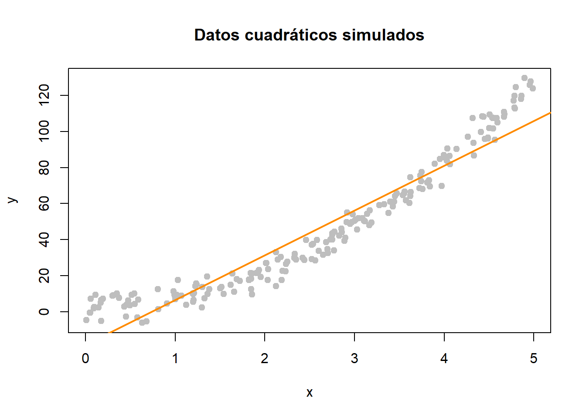
par(mfrow = c(1, 2))
plot(fitted(lin_fit), resid(lin_fit), col = "grey", pch = 20,
xlab = "Ajustados", ylab = "Residuales", main = "Ajustados versus Residuales")
abline(h = 0, col = "darkorange", lwd = 2)
qqnorm(resid(lin_fit), main = "Normal Q-Q Plot", col = "darkgrey")
qqline(resid(lin_fit), col = "dodgerblue", lwd = 2)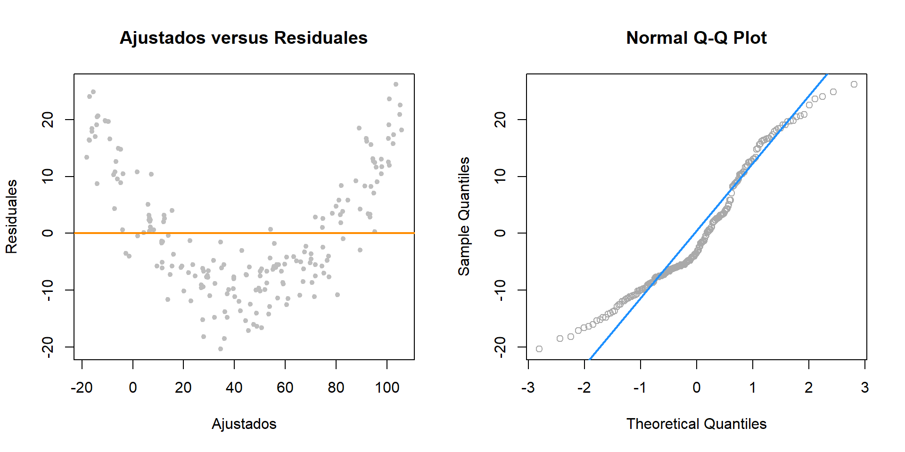
\[ Y_i = \beta_0 + \beta_1 x_i + \beta_2 x_i^2 + \epsilon_i \]
quad_fit = lm(y ~ x + I(x^2), data = quad_data)
summary(quad_fit)##
## Call:
## lm(formula = y ~ x + I(x^2), data = quad_data)
##
## Residuals:
## Min 1Q Median 3Q Max
## -11.4167 -3.0581 0.2297 3.1024 12.1256
##
## Coefficients:
## Estimate Std. Error t value Pr(>|t|)
## (Intercept) 3.0649 0.9577 3.200 0.0016 **
## x -0.5108 0.8637 -0.591 0.5549
## I(x^2) 5.0740 0.1667 30.433 <2e-16 ***
## ---
## Signif. codes: 0 '***' 0.001 '**' 0.01 '*' 0.05 '.' 0.1 ' ' 1
##
## Residual standard error: 4.531 on 197 degrees of freedom
## Multiple R-squared: 0.9853, Adjusted R-squared: 0.9852
## F-statistic: 6608 on 2 and 197 DF, p-value: < 2.2e-16plot(y ~ x, data = quad_data, col = "grey", pch = 20, cex = 1.5,
main = "Datos cuadráticos simulados")
curve(quad_fit$coef[1] + quad_fit$coef[2] * x + quad_fit$coef[3] * x ^ 2,
from = -5, to = 30, add = TRUE, col = "darkorange", lwd = 2)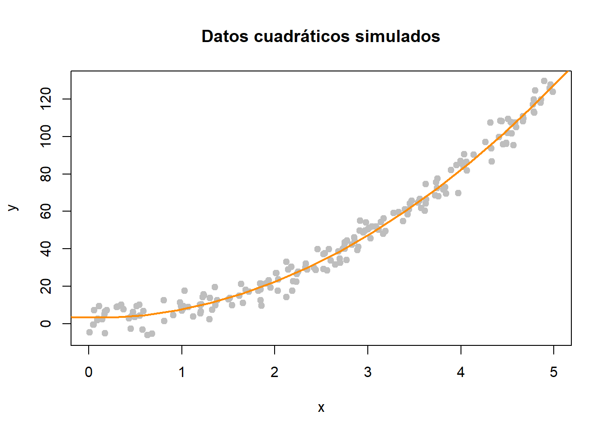
par(mfrow = c(1, 2))
plot(fitted(quad_fit), resid(quad_fit), col = "grey", pch = 20,
xlab = "Ajustados", ylab = "Residuales", main = "Ajustados versus Residuales")
abline(h = 0, col = "darkorange", lwd = 2)
qqnorm(resid(quad_fit), main = "Normal Q-Q Plot", col = "darkgrey")
qqline(resid(quad_fit), col = "dodgerblue", lwd = 2)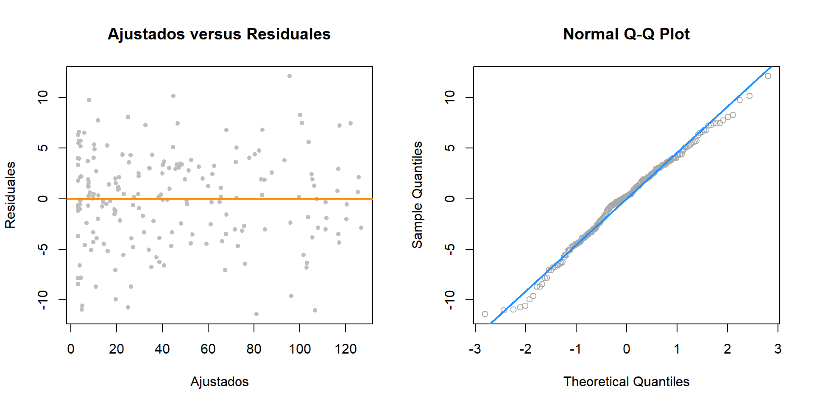
14.2.3 Sobreajuste y extrapolación
sim_for_perf = function() {
x = seq(0, 10)
y = 3 + x - 4 * x ^ 2 + rnorm(n = 11, mean = 0, sd = 25)
data.frame(x, y)
}set.seed(1234)
data_for_perf = sim_for_perf()fit_correct = lm(y ~ x + I(x ^ 2), data = data_for_perf)
fit_perfect = lm(y ~ x + I(x ^ 2) + I(x ^ 3) + I(x ^ 4) + I(x ^ 5) + I(x ^ 6) +
I(x ^ 7) + I(x ^ 8) + I(x ^ 9) + I(x ^ 10),
data = data_for_perf)x_plot = seq(-5, 15, by = 0.1)
plot(y ~ x, data = data_for_perf, ylim = c(-450, 100), cex = 2, pch = 20)
lines(x_plot, predict(fit_correct, newdata = data.frame(x = x_plot)),
col = "dodgerblue", lwd = 2, lty = 1)
lines(x_plot, predict(fit_perfect, newdata = data.frame(x = x_plot)),
col = "darkorange", lwd = 2, lty = 2)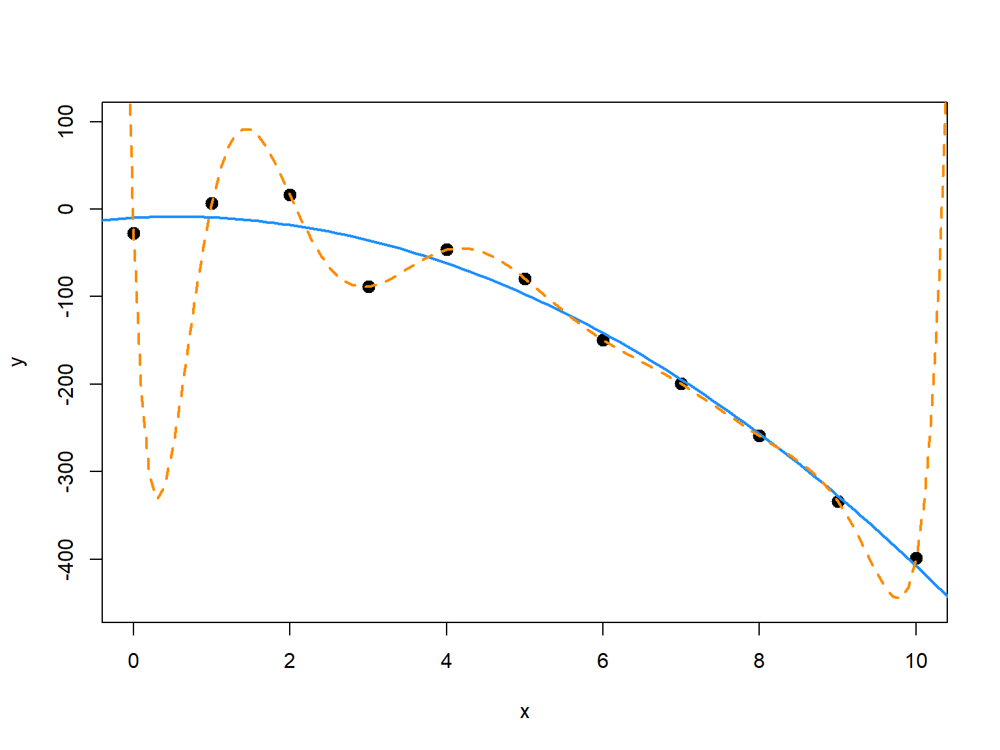
14.2.4 Comparación de modelos polinomiales
sim_higher = function(sample_size = 250) {
x = runif(n = sample_size, min = -1, max = 1) * 2
y = 3 + -6 * x ^ 2 + 1 * x ^ 4 + rnorm(n = sample_size, mean = 0, sd = 3)
data.frame(x, y)
}\[ Y_i = \beta_0 + \beta_1 x_i + \beta_2 x_i^2 + \epsilon_i \]
\[ Y_i = \beta_0 + \beta_1 x_i + \beta_2 x_i^2 + \beta_3 x_i^3 + \beta_4 x_i^4 + \epsilon_i \]
\[ Y_i = \beta_0 + \beta_1 x_i + \beta_2 x_i^2 + \beta_3 x_i^3 + \beta_4 x_i^4 + \beta_5 x_i^5 + \beta_6 x_i^6 + \epsilon_i \]
set.seed(42)
data_higher = sim_higher()plot(y ~ x, data = data_higher, col = "grey", pch = 20, cex = 1.5,
main = "Datos cuarticos simulados")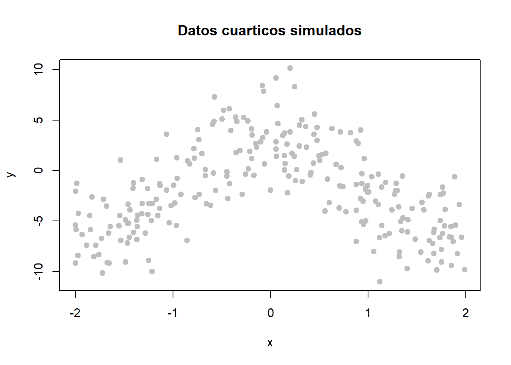
fit_2 = lm(y ~ poly(x, 2), data = data_higher)
fit_4 = lm(y ~ poly(x, 4), data = data_higher)plot(y ~ x, data = data_higher, col = "grey", pch = 20, cex = 1.5,
main = "Datos cuarticos simulados")
x_plot = seq(-5, 5, by = 0.05)
lines(x_plot, predict(fit_2, newdata = data.frame(x = x_plot)),
col = "dodgerblue", lwd = 2, lty = 1)
lines(x_plot, predict(fit_4, newdata = data.frame(x = x_plot)),
col = "darkorange", lwd = 2, lty = 2)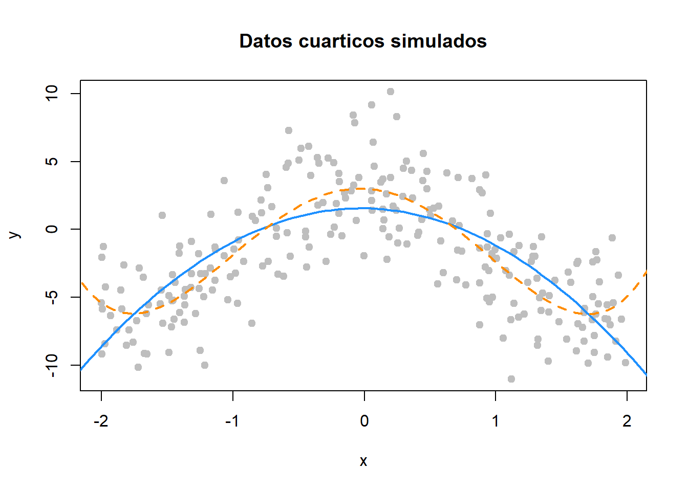
par(mfrow = c(1, 2))
plot(fitted(fit_2), resid(fit_2), col = "grey", pch = 20,
xlab = "Ajustados", ylab = "Residuales", main = "Ajustados versus Residuales")
abline(h = 0, col = "darkorange", lwd = 2)
qqnorm(resid(fit_2), main = "Normal Q-Q Plot", col = "darkgrey")
qqline(resid(fit_2), col = "dodgerblue", lwd = 2)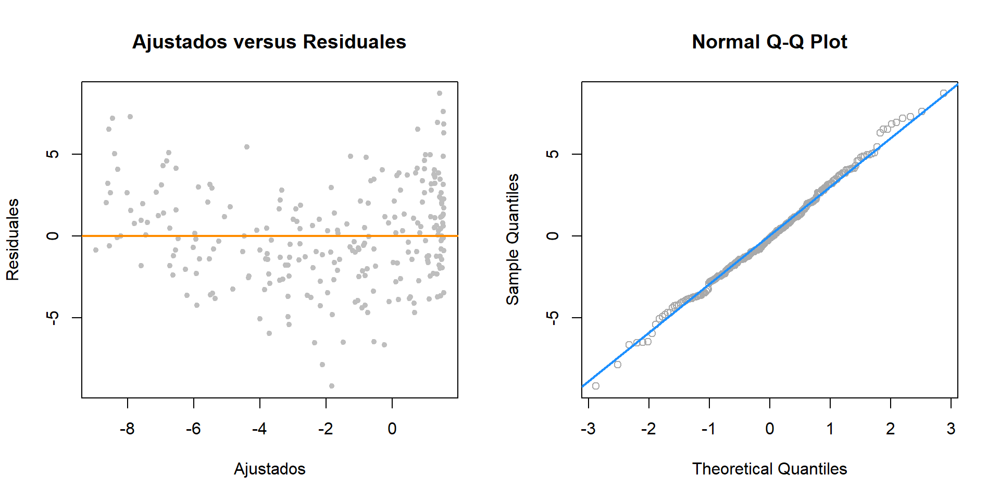
par(mfrow = c(1, 2))
plot(fitted(fit_4), resid(fit_4), col = "grey", pch = 20,
xlab = "Ajustados", ylab = "Residuales", main = "Ajustados versus Residuales")
abline(h = 0, col = "darkorange", lwd = 2)
qqnorm(resid(fit_4), main = "Normal Q-Q Plot", col = "darkgrey")
qqline(resid(fit_4), col = "dodgerblue", lwd = 2)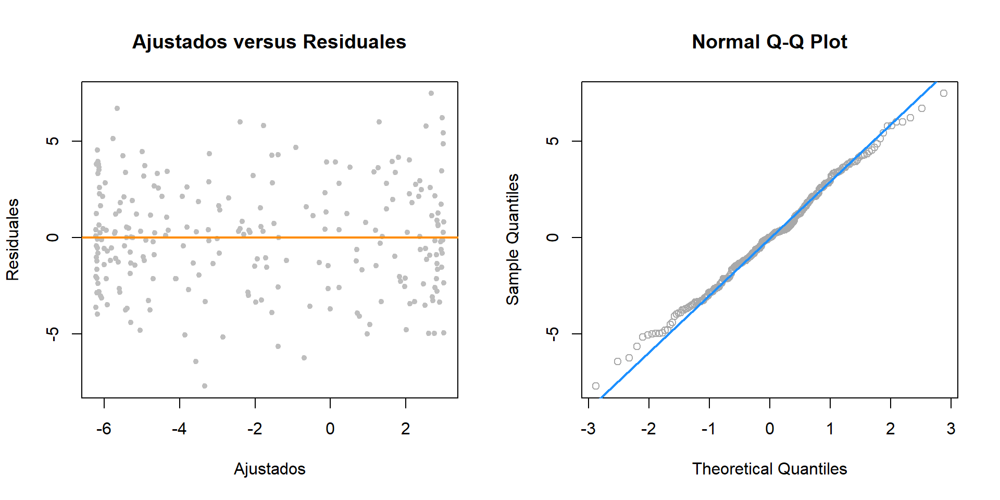
anova(fit_2, fit_4)## Analysis of Variance Table
##
## Model 1: y ~ poly(x, 2)
## Model 2: y ~ poly(x, 4)
## Res.Df RSS Df Sum of Sq F Pr(>F)
## 1 247 2334.1
## 2 245 1912.6 2 421.51 26.997 2.536e-11 ***
## ---
## Signif. codes: 0 '***' 0.001 '**' 0.01 '*' 0.05 '.' 0.1 ' ' 1fit_6 = lm(y ~ poly(x, 6), data = data_higher)anova(fit_4, fit_6)## Analysis of Variance Table
##
## Model 1: y ~ poly(x, 4)
## Model 2: y ~ poly(x, 6)
## Res.Df RSS Df Sum of Sq F Pr(>F)
## 1 245 1912.6
## 2 243 1904.4 2 8.1889 0.5224 0.593714.2.5 poly() Función y polinomios ortogonales
\[ Y_i = \beta_0 + \beta_1 x_i + \beta_2 x_i^2 + \beta_3 x_i^3 + \beta_4 x_i^4 + \epsilon_i \]
fit_4a = lm(y ~ poly(x, degree = 4), data = data_higher)
fit_4b = lm(y ~ poly(x, degree = 4, raw = TRUE), data = data_higher)
fit_4c = lm(y ~ x + I(x^2) + I(x^3) + I(x^4), data = data_higher)coef(fit_4a)## (Intercept) poly(x, degree = 4)1 poly(x, degree = 4)2
## -1.980036 -2.053929 -49.344752
## poly(x, degree = 4)3 poly(x, degree = 4)4
## 0.669874 20.519759coef(fit_4b)## (Intercept) poly(x, degree = 4, raw = TRUE)1
## 2.9996256 -0.3880250
## poly(x, degree = 4, raw = TRUE)2 poly(x, degree = 4, raw = TRUE)3
## -6.1511166 0.1269046
## poly(x, degree = 4, raw = TRUE)4
## 1.0282139coef(fit_4c)## (Intercept) x I(x^2) I(x^3) I(x^4)
## 2.9996256 -0.3880250 -6.1511166 0.1269046 1.0282139unname(coef(fit_4a))## [1] -1.980036 -2.053929 -49.344752 0.669874 20.519759unname(coef(fit_4b))## [1] 2.9996256 -0.3880250 -6.1511166 0.1269046 1.0282139unname(coef(fit_4c))## [1] 2.9996256 -0.3880250 -6.1511166 0.1269046 1.0282139all.equal(fitted(fit_4a),
fitted(fit_4b))## [1] TRUEall.equal(resid(fit_4a),
resid(fit_4b))## [1] TRUEsummary(fit_4a)##
## Call:
## lm(formula = y ~ poly(x, degree = 4), data = data_higher)
##
## Residuals:
## Min 1Q Median 3Q Max
## -7.6982 -2.0334 0.0042 1.9532 7.4626
##
## Coefficients:
## Estimate Std. Error t value Pr(>|t|)
## (Intercept) -1.9800 0.1767 -11.205 < 2e-16 ***
## poly(x, degree = 4)1 -2.0539 2.7940 -0.735 0.463
## poly(x, degree = 4)2 -49.3448 2.7940 -17.661 < 2e-16 ***
## poly(x, degree = 4)3 0.6699 2.7940 0.240 0.811
## poly(x, degree = 4)4 20.5198 2.7940 7.344 3.06e-12 ***
## ---
## Signif. codes: 0 '***' 0.001 '**' 0.01 '*' 0.05 '.' 0.1 ' ' 1
##
## Residual standard error: 2.794 on 245 degrees of freedom
## Multiple R-squared: 0.5993, Adjusted R-squared: 0.5928
## F-statistic: 91.61 on 4 and 245 DF, p-value: < 2.2e-16summary(fit_4c)##
## Call:
## lm(formula = y ~ x + I(x^2) + I(x^3) + I(x^4), data = data_higher)
##
## Residuals:
## Min 1Q Median 3Q Max
## -7.6982 -2.0334 0.0042 1.9532 7.4626
##
## Coefficients:
## Estimate Std. Error t value Pr(>|t|)
## (Intercept) 2.9996 0.3315 9.048 < 2e-16 ***
## x -0.3880 0.3828 -1.014 0.312
## I(x^2) -6.1511 0.5049 -12.183 < 2e-16 ***
## I(x^3) 0.1269 0.1456 0.871 0.384
## I(x^4) 1.0282 0.1400 7.344 3.06e-12 ***
## ---
## Signif. codes: 0 '***' 0.001 '**' 0.01 '*' 0.05 '.' 0.1 ' ' 1
##
## Residual standard error: 2.794 on 245 degrees of freedom
## Multiple R-squared: 0.5993, Adjusted R-squared: 0.5928
## F-statistic: 91.61 on 4 and 245 DF, p-value: < 2.2e-1614.2.6 Función de inhibición
coef(lm(y ~ x + x ^ 2, data = quad_data))## (Intercept) x
## -18.32715 24.87163coef(lm(y ~ x + I(x ^ 2), data = quad_data))## (Intercept) x I(x^2)
## 3.0649446 -0.5108131 5.0739805coef(lm(y ~ x + x:x, data = quad_data))## (Intercept) x
## -18.32715 24.87163coef(lm(y ~ x * x, data = quad_data))## (Intercept) x
## -18.32715 24.87163coef(lm(y ~ x ^ 2, data = quad_data))## (Intercept) x
## -18.32715 24.87163coef(lm(y ~ x + x ^ 2, data = quad_data))## (Intercept) x
## -18.32715 24.87163coef(lm(y ~ I(x + x), data = quad_data))## (Intercept) I(x + x)
## -18.32715 12.43582coef(lm(y ~ x + x, data = quad_data))## (Intercept) x
## -18.32715 24.8716314.2.7 Ejemplo con datos
pairs(autompg)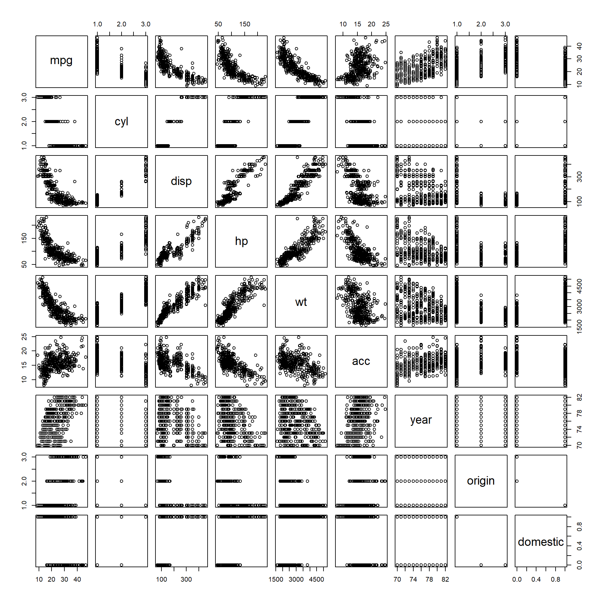
mpg_hp = lm(mpg ~ hp, data = autompg)
par(mfrow = c(1, 2))
plot(mpg ~ hp, data = autompg, col = "dodgerblue", pch = 20, cex = 1.5)
abline(mpg_hp, col = "darkorange", lwd = 2)
plot(fitted(mpg_hp), resid(mpg_hp), col = "dodgerblue",
pch = 20, cex = 1.5, xlab = "Ajustados", ylab = "Residuales")
abline(h = 0, lty = 2, col = "darkorange", lwd = 2)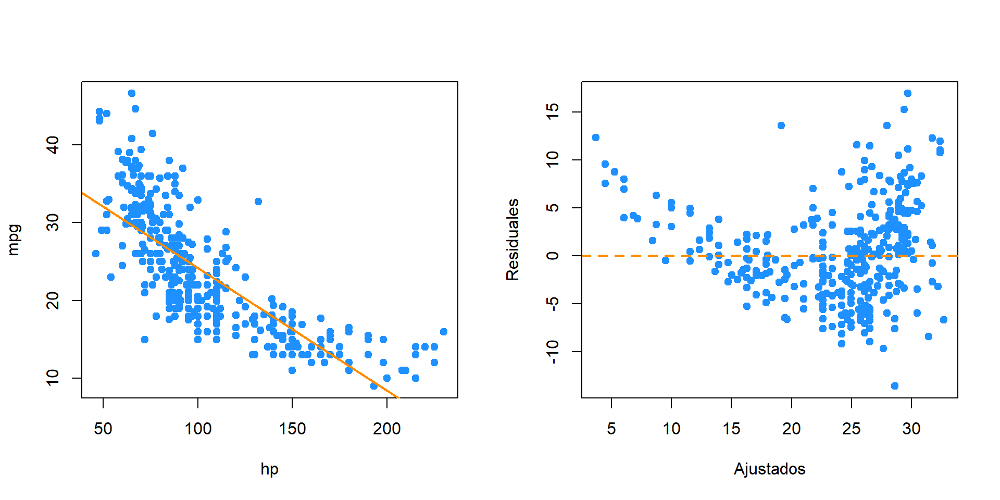
mpg_hp_log = lm(mpg ~ hp + I(hp ^ 2), data = autompg)
par(mfrow = c(1, 2))
plot(mpg ~ hp, data = autompg, col = "dodgerblue", pch = 20, cex = 1.5)
xplot = seq(min(autompg$hp), max(autompg$hp), by = 0.1)
lines(xplot, predict(mpg_hp_log, newdata = data.frame(hp = xplot)),
col = "darkorange", lwd = 2, lty = 1)
plot(fitted(mpg_hp_log), resid(mpg_hp_log), col = "dodgerblue",
pch = 20, cex = 1.5, xlab = "Ajustados", ylab = "Residuales")
abline(h = 0, lty = 2, col = "darkorange", lwd = 2)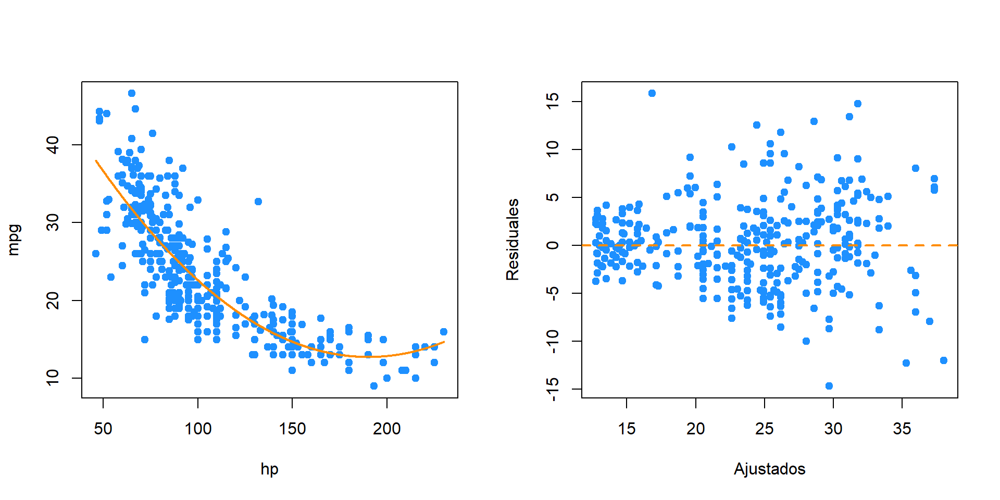
mpg_hp_log = lm(log(mpg) ~ hp + I(hp ^ 2), data = autompg)
par(mfrow = c(1, 2))
plot(log(mpg) ~ hp, data = autompg, col = "dodgerblue", pch = 20, cex = 1.5)
xplot = seq(min(autompg$hp), max(autompg$hp), by = 0.1)
lines(xplot, predict(mpg_hp_log, newdata = data.frame(hp = xplot)),
col = "darkorange", lwd = 2, lty = 1)
plot(fitted(mpg_hp_log), resid(mpg_hp_log), col = "dodgerblue",
pch = 20, cex = 1.5, xlab = "Ajustados", ylab = "Residuales")
abline(h = 0, lty = 2, col = "darkorange", lwd = 2)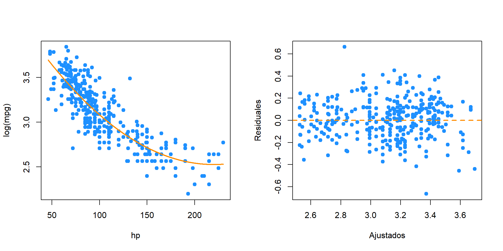
mpg_hp_loglog = lm(log(mpg) ~ log(hp), data = autompg)
par(mfrow = c(1, 2))
plot(log(mpg) ~ log(hp), data = autompg, col = "dodgerblue", pch = 20, cex = 1.5)
abline(mpg_hp_loglog, col = "darkorange", lwd = 2)
plot(fitted(mpg_hp_loglog), resid(mpg_hp_loglog), col = "dodgerblue",
pch = 20, cex = 1.5, xlab = "Ajustados", ylab = "Residuales")
abline(h = 0, lty = 2, col = "darkorange", lwd = 2)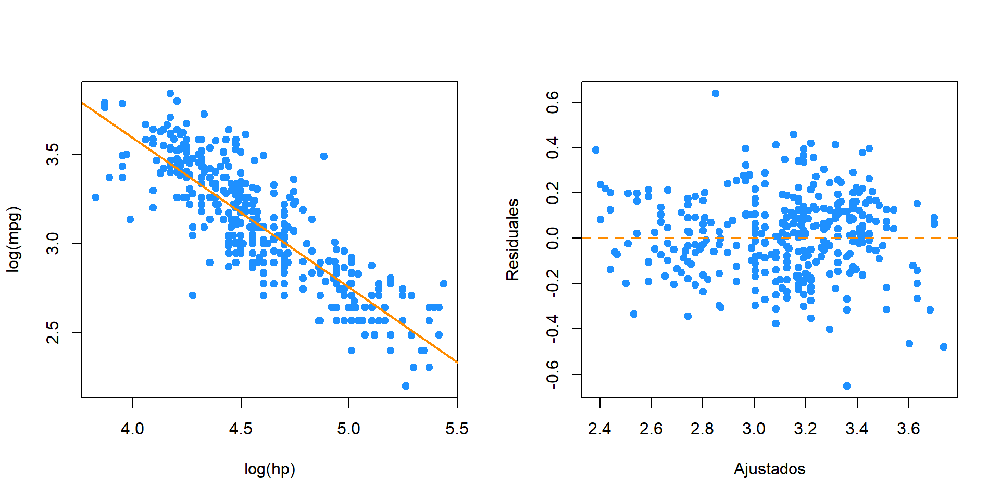
big_model = lm(mpg ~ disp * hp * domestic, data = autompg)qqnorm(resid(big_model), col = "darkgrey")
qqline(resid(big_model), col = "dodgerblue", lwd = 2)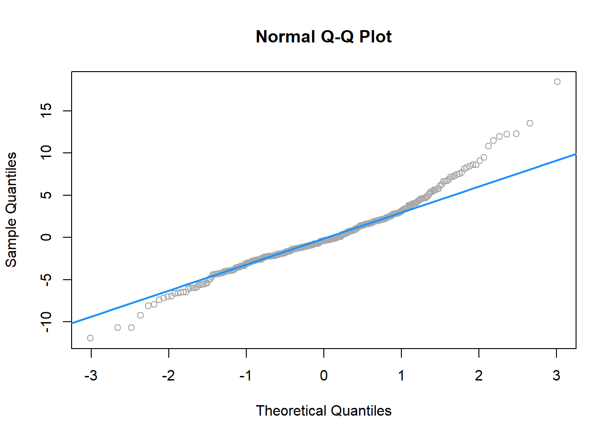
bigger_model = lm(log(mpg) ~ disp * hp * domestic +
I(disp ^ 2) + I(hp ^ 2), data = autompg)
summary(bigger_model)##
## Call:
## lm(formula = log(mpg) ~ disp * hp * domestic + I(disp^2) + I(hp^2),
## data = autompg)
##
## Residuals:
## Min 1Q Median 3Q Max
## -0.40381 -0.08635 -0.01040 0.09995 0.71365
##
## Coefficients:
## Estimate Std. Error t value Pr(>|t|)
## (Intercept) 4.276e+00 2.564e-01 16.674 <2e-16 ***
## disp -5.289e-03 2.565e-03 -2.062 0.0399 *
## hp -7.386e-03 3.309e-03 -2.232 0.0262 *
## domestic -2.496e-01 2.787e-01 -0.896 0.3710
## I(disp^2) 8.552e-06 4.141e-06 2.065 0.0396 *
## I(hp^2) -1.565e-05 1.679e-05 -0.932 0.3519
## disp:hp 2.685e-05 3.082e-05 0.871 0.3842
## disp:domestic -1.101e-03 2.526e-03 -0.436 0.6631
## hp:domestic 7.560e-03 3.689e-03 2.049 0.0411 *
## disp:hp:domestic -2.311e-05 2.662e-05 -0.868 0.3859
## ---
## Signif. codes: 0 '***' 0.001 '**' 0.01 '*' 0.05 '.' 0.1 ' ' 1
##
## Residual standard error: 0.1507 on 373 degrees of freedom
## Multiple R-squared: 0.8107, Adjusted R-squared: 0.8062
## F-statistic: 177.5 on 9 and 373 DF, p-value: < 2.2e-16qqnorm(resid(bigger_model), col = "darkgrey")
qqline(resid(bigger_model), col = "dodgerblue", lwd = 2)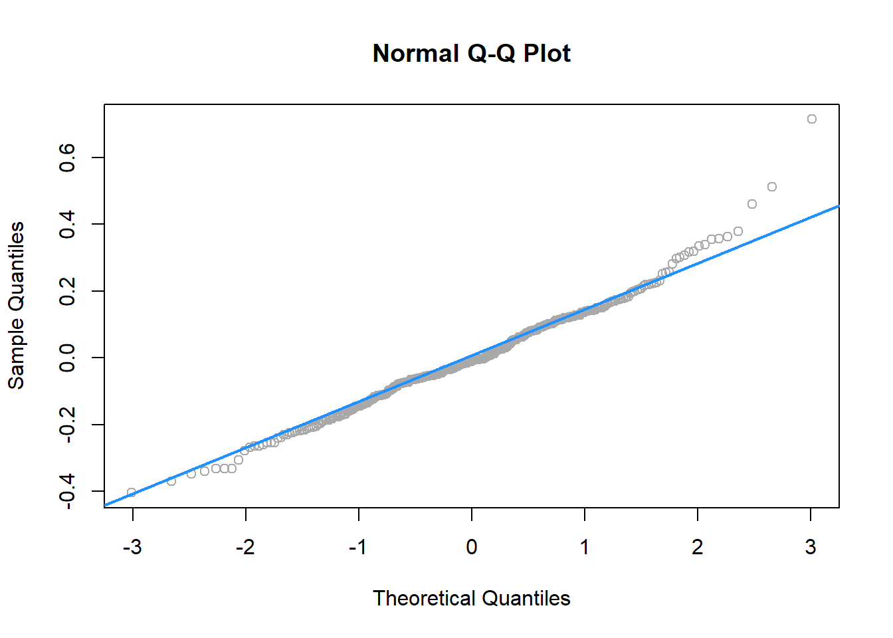